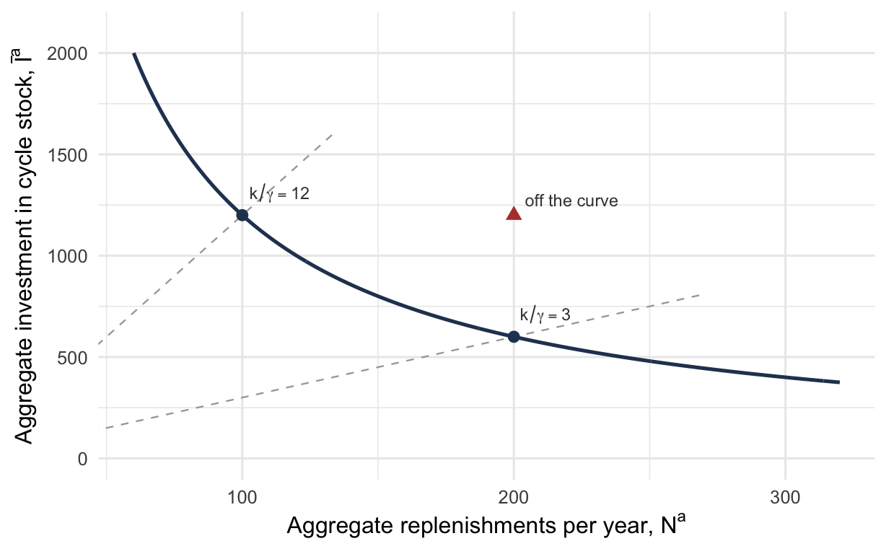
4 Multi-Item and Constrained Systems
NoteLearning objectives
After reading this chapter you should be able to:
- explain how a shared resource couples items whose models are otherwise independent
- formulate a lot sizing problem with an aggregate constraint and solve it with a Lagrange multiplier
- interpret the multiplier as a shadow price, and recognize when it is instead an implied carrying charge
- show that a budget constraint scales every order quantity by the same factor
- construct an exchange curve and read from current practice the cost ratio it implies
- use the variety index to say how much of aggregate performance is driven by the spread across items
- evaluate a power-of-two policy and state what it costs against the best coordinated policy
- define echelon inventory and echelon holding cost, and explain why installation accounting double counts
- find the optimal reorder intervals for a serial system and for a distribution system
Recall that Chapter 3 took one item at a time. Every model in it produced an order quantity from that item’s own demand, prices, and replenishment rate, and nothing about any other item entered the calculation. That independence is what made the chapter tractable, and it is what this chapter removes.
In this chapter we develop the models that apply when items must be decided together. We begin with items that compete for something scarce, then turn to items that share the cost of an order, and end with stock that exists in order to replenish other stock. Each of the three couples the items differently, and each therefore needs its own machinery.
4.1 When Items Stop Being Independent
An item’s lot sizing decision can be made on its own only if nothing it consumes is also consumed by something else. Two different things break that condition, and they lead to different mathematics.
A shared resource couples items through a constraint. Warehouse space, working capital tied up in stock, and the receiving department’s capacity to process orders are all finite and shared. A larger order for one item leaves less for the others. The items’ cost functions stay separate; what ties them together is a single inequality they must jointly satisfy. Four such constraints are common:
- average total inventory investment, at most a budget
- average number of replenishments per unit time, at most a fixed limit
- maximum space used, at most what is available
- maximum allowed backorder delay, at most a fixed limit
A shared setup couples items through a cost. For example, when several items come from one supplier on one truck, or run on one machine that is set up once for a family, part of the cost of ordering is incurred once regardless of how many items are on the order. The cost functions themselves are no longer separate.
Section 4.2 through Section 4.4 treat the first case, where the coupling is a constraint. Section 4.5 treats the second, where the coupling is a cost. The techniques have almost nothing in common, so they occupy separate halves of the chapter. Section 4.6 then takes up a third kind of coupling, in which one stock exists in order to replenish another, and shows that the power-of-two machinery carries over once the holding cost is accounted for correctly.
Throughout this chapter, demand is still known and constant, and every item is still governed by the classical model of Section 3.5.4. What changes is only that the items are decided together. To begin, we take up the case where the items compete for a single scarce resource.
4.2 A Constrained Lot Sizing Problem
Consider a group of items that draw on one scarce resource. We need notation for the items before we can write the problem down.
- Let \(n\) represent the number of items sharing the resource, indexed by \(j\).
- Let \(\lambda_j\) represent the demand rate for item \(j\), which is known and constant.
- Let \(c_j\) represent the unit cost of item \(j\), and \(k_j\) its ordering cost.
- Let \(h_j\) represent the holding cost rate for item \(j\), which is \(ic_j\) when holding cost is charged as a carrying charge on value.
- Let \(Q_j\) represent the order quantity for item \(j\), the quantity we are choosing.
The decision is the vector \(Q_1, \ldots, Q_n\), and the objective is the sum of the relevant costs of Equation 1.16:
\[ \min\ C = \sum_{j=1}^{n}\left[\frac{k_j\lambda_j}{Q_j} + \frac{h_j Q_j}{2}\right] \tag{4.1}\]
Now consider the four constraints listed in Section 4.1. The first and third are linear in the order quantities.
- Let \(a_j\) represent what one unit of item \(j\) consumes of the shared resource.
- Let \(A\) represent how much of the resource there is.
Both take the form
\[ \sum_{j=1}^{n} a_j Q_j \le A \tag{4.2}\]
For example, under a space constraint \(a_j\) is the floor space one unit occupies and \(A\) is the space available, since immediately after a replenishment there are \(Q_j\) units on the floor. Under a budget constraint on average investment the average on-hand level is \(Q_j/2\) and its value is \(c_j Q_j/2\), so that \(a_j = c_j/2\) and \(A\) is the budget. Both are Equation 4.2 with different coefficients, so one derivation covers them together.
The second constraint is not linear. An item ordered in quantity \(Q_j\) is replenished \(\lambda_j/Q_j\) times per unit time, so a limit on replenishments reads
\[ \sum_{j=1}^{n} \frac{\lambda_j}{Q_j} \le A \tag{4.3}\]
Consumption falls here as the quantities rise, instead of growing with them. Thus, this is a different problem, and Section 4.2.4 takes it up once the linear case is settled. The fourth constraint, on backorder delay, belongs with the models that permit shortages and is not treated in this chapter.
4.2.1 First Check Whether the Constraint Binds
Equation 4.1 is separable: it is a sum of terms, each involving only one item’s quantity. Recall from Section 3.5.4 that each such term is convex, and a sum of convex functions is convex. Thus, in the absence of the constraint each item can be optimized on its own, and the answer is the ordinary order quantity of Equation 3.17:
\[ Q_j^{*} = \sqrt{\frac{2k_j\lambda_j}{h_j}} \]
That gives a three-step procedure whose first step is free:
- Solve the unconstrained problem, item by item.
- If \(\sum_j a_j Q_j^{*} \le A\), the constraint is inactive and the unconstrained answer is the answer. Otherwise it is active and step 3 applies.
- Solve the problem with the constraint imposed as an equality.
Step 2 is easy to skip and expensive to skip. A constraint that does not bind changes nothing, and the machinery of the next two sections is needed only when the resource runs out. You should perform this check first every time.
Step 3 may treat the inequality as an equality because the objective is convex. That is, if the unconstrained optimum violates the limit, then the constrained optimum sits on the boundary of the feasible region, and on that boundary the inequality holds with equality. The problem we actually solve is an equality-constrained one.
4.2.2 Moving the Constraint into the Objective
The method of Lagrange multipliers moves a constraint into the objective in order that the unconstrained techniques of Chapter 3 apply to what is left.
- Let \(\theta\) represent the multiplier, a single scalar attached to the constraint, whatever the number of items.
With this notation we form the Lagrange function
\[ L(\vec{Q}, \theta) = \sum_{j=1}^{n}\left[\frac{k_j\lambda_j}{Q_j} + \frac{h_j Q_j}{2}\right] + \theta\left[\sum_{j=1}^{n} a_j Q_j - A\right] \tag{4.4}\]
Notice that the bracketed term is zero whenever the constraint holds as an equality. At any feasible point on the boundary, \(L\) and \(C\) agree, so minimizing \(L\) is a legitimate substitute for minimizing \(C\). Setting the partial derivatives to zero gives \(n+1\) equations in the \(n\) quantities and \(\theta\):
\[ \frac{\partial L}{\partial Q_j} = -\frac{k_j\lambda_j}{Q_j^{2}} + \frac{h_j}{2} + \theta a_j = 0, \qquad j = 1, 2, \ldots, n \]
\[ \frac{\partial L}{\partial \theta} = \sum_{j=1}^{n} a_j Q_j - A = 0 \]
Solving the first set for each quantity in terms of \(\theta\), we obtain
\[ Q_j(\theta) = \sqrt{\frac{2k_j\lambda_j}{h_j + 2\theta a_j}} \tag{4.5}\]
Notice that Equation 4.5 is Equation 3.17 with the holding cost rate \(h_j\) replaced by \(h_j + 2\theta a_j\). The multiplier acts as a surcharge on holding, charged in proportion to how much of the scarce resource a unit consumes. An item that occupies a lot of space, or ties up a lot of capital, is penalized more and its quantity falls further. Doubling \(a_j\) for one item while leaving everything else alone doubles the surcharge that item pays.
4.2.3 Finding the Multiplier
Substituting Equation 4.5 into the remaining equation, we are left with one equation in one unknown:
\[ R(\theta) = \sum_{j=1}^{n} a_j\sqrt{\frac{2k_j\lambda_j}{h_j + 2\theta a_j}} - A \tag{4.6}\]
Let \(R(\theta)\) represent the resource function, the amount of the shared resource the quantities consume at multiplier \(\theta\), less the amount available. Every term of the sum decreases as \(\theta\) increases. \(R\) is strictly decreasing. At \(\theta = 0\) it is positive, because that is precisely the case in which the unconstrained quantities violate the limit, and it tends to \(-A\) as \(\theta\) grows without bound. Thus, there is exactly one root \(\theta^{*} > 0\), and any root-finding method will locate it. Bisection is enough: bracket the root, halve the interval, repeat.
The whole procedure is a one-dimensional search wrapped around a formula, so these problems are routinely solved in a spreadsheet with a nonlinear solver. The single root is also what makes the search dependable, a point we return to in Section 4.7.1. We now work a complete instance.
Example 4.1 (An investment limit on three items) A distributor stocks three items that are funded out of one working capital account. Each costs $50 to order and the carrying charge is 30% per year. Let \(i = 0.30\) represent that carrying charge, so that \(h_j = ic_j\) for every item.
What is stocked? Three items, each replenished from its own supplier.
What is the demand process? Constant and known, at the rates in Table 4.1.
When is inventory reviewed? Continuously, item by item.
What triggers replenishment, and how much? Each item’s shelf reaching zero, and the order is for that item’s \(Q_j\), which are the three decisions.
What happens to unmet demand? None occurs; shortages are not allowed.
What costs are incurred, and when? $50 each time any item is ordered, and the carrying charge on the value held, subject to management funding no more than $10,000 of average investment across the three.
| Item | \(\lambda_j\) | \(c_j\) | \(h_j = ic_j\) | \(Q_j^{*}\) unconstrained |
|---|---|---|---|---|
| 1 | 12,000 | $20 | $6.00 | 447.21 |
| 2 | 25,000 | $10 | $3.00 | 912.87 |
| 3 | 8,000 | $15 | $4.50 | 421.64 |
Step 1, the unconstrained solution. Applying Equation 3.17 to each item gives the quantities in Table 4.1, a relevant cost of $7,319.26 a year, and an average investment of
\[ \sum_{j} c_j\frac{Q_j^{*}}{2} = 20\frac{447.21}{2} + 10\frac{912.87}{2} + 15\frac{421.64}{2} = \$12{,}198.77 \]
Step 2, does the constraint bind? Management will fund $10,000. Since $12,198.77 exceeds $10,000, the constraint is active. The unconstrained answer is not available, and we continue to step 3.
Step 3, solve for the multiplier. Recall that under a budget constraint \(a_j = c_j/2\). Substituting into Equation 4.5, the surcharge \(2\theta a_j\) becomes \(\theta c_j\), and we have
\[ Q_j(\theta) = \sqrt{\frac{2k_j\lambda_j}{h_j + \theta c_j}} \]
Bisection on Equation 4.6 gives \(\theta^{*} = 0.14643\). Evaluating Equation 4.5 at that multiplier gives the quantities in Table 4.2, together with the cost each item then incurs.
| Item | \(Q_j\) constrained | Ordering cost | Holding cost |
|---|---|---|---|
| 1 | 366.61 | $1,636.64 | $1,099.82 |
| 2 | 748.33 | $1,670.39 | $1,122.50 |
| 3 | 345.64 | $1,157.28 | $777.69 |
| Total | $4,464.30 | $3,000.00 |
The arithmetic check. Notice that the holding cost total is exactly $3,000, or \(0.30 \times \$10{,}000\). The constraint fixed the investment, so it fixed the holding cost with it, and the two numbers must agree. You should perform that check every time a budget constraint is solved, because it catches an error in either the multiplier or the quantities immediately. The investment itself comes to exactly $10,000, as an active constraint requires.
What the limit means for the distributor. The relevant cost is $7,464.30, so the constraint raised the annual cost by $145.04, or 1.98%. That is the price of holding $2,199 less in stock. Thus, when someone proposes tightening or relaxing the working capital account, $145.04 is the figure that belongs in the conversation, and you should be prepared to supply it instead of merely complying with the limit.
Notice also that the ordering and holding costs are no longer equal, at $4,464.30 against $3,000.00. Recall from Section 3.5.4 that at an unconstrained optimum the two are equal. That property fails here, as it must, because these quantities do not minimize the unconstrained cost. Thus, if you check a constrained solution by looking for balanced costs, you will conclude wrongly that something is broken.
4.2.4 When the Limit Is on Ordering, Not on Stock
Equation 4.3 limits how often the operation can act, not how much it can hold. For example, receiving docks, purchasing staff, and inspection capacity all impose limits of this kind. The mathematics turns out to run in the opposite direction from the linear case.
We form the Lagrange function as before, with Equation 4.3 in place of Equation 4.2:
\[ L(\vec{Q}, \theta) = \sum_{j=1}^{n}\left[\frac{k_j\lambda_j}{Q_j} + \frac{h_j Q_j}{2}\right] + \theta\left[\sum_{j=1}^{n}\frac{\lambda_j}{Q_j} - A\right] \]
The ordering term and the constraint both carry \(\lambda_j/Q_j\). They combine when we differentiate:
\[ \frac{\partial L}{\partial Q_j} = -\frac{(k_j + \theta)\lambda_j}{Q_j^{2}} + \frac{h_j}{2} = 0 \qquad\Longrightarrow\qquad Q_j(\theta) = \sqrt{\frac{2(k_j + \theta)\lambda_j}{h_j}} \tag{4.7}\]
Compare Equation 4.7 with Equation 4.5. There the multiplier was added to the holding rate; here it is added to the ordering cost. That is the whole of the difference, and the three consequences below all follow from it.
The multiplier is a price per order. Its units are dollars per order, i.e. the units of \(k_j\), because that is the quantity it is added to. Thus, a limit on ordering capacity and a supplier who charges more per order are the same thing seen from two sides, exactly as a budget limit and a higher cost of capital were in Section 4.3.
Quantities rise, they do not fall. Ordering less often means ordering more each time. Thus, every \(Q_j\) increases with \(\theta\) and the replenishment count falls. The search still works for the reason given in Section 4.2.3, since \(\sum_j\lambda_j/Q_j(\theta)\) is again strictly decreasing in \(\theta\) with a single root. Bisection applies unchanged.
The proportions do not survive. Recall that Equation 4.9 held because the budget multiplier entered as a factor \((i + \theta)\) common to every item. Here it enters as a sum, \(k_j + \theta\), and adding a constant to unequal ordering costs changes them by unequal proportions. Thus, a frequency limit reallocates between items where a budget does not. The one exception is the case in which every item already has the same ordering cost, when \(k + \theta\) is again common to all items and the portfolio rescales uniformly.
Example 4.2 (A limit on replenishments) Return to the distributor of Example 4.1, with the same demands and unit costs and the same carrying charge of 30% per year. This time the items differ in what they cost to order, and the limit falls on the receiving dock, not on the capital account.
| Item | \(\lambda_j\) | \(c_j\) | \(k_j\) | \(h_j\) | \(Q_j^{*}\) | Orders per year |
|---|---|---|---|---|---|---|
| 1 | 12,000 | $20 | $50 | $6.00 | 447.21 | 26.83 |
| 2 | 25,000 | $10 | $20 | $3.00 | 577.35 | 43.30 |
| 3 | 8,000 | $15 | $80 | $4.50 | 533.33 | 15.00 |
| Total | 85.13 |
Unconstrained, the three items cost $6,815.33 a year and require 85.13 replenishments. The receiving dock can process 50. Since 85.13 exceeds 50, the constraint is active.
Solving. Bisection on \(\sum_j\lambda_j/Q_j(\theta) - 50\), with \(Q_j(\theta)\) taken from Equation 4.7, gives \(\theta^{*} = \$64.33\) per order.
| Item | Effective \(k_j + \theta^{*}\) | \(Q_j\) | Orders per year | \(Q_j/Q_j^{*}\) |
|---|---|---|---|---|
| 1 | $114.33 | 676.25 | 17.74 | 1.5121 |
| 2 | $84.33 | 1,185.53 | 21.09 | 2.0534 |
| 3 | $144.33 | 716.36 | 11.17 | 1.3432 |
| Total | 50.00 |
The arithmetic check. The replenishments total exactly 50.00, as an active constraint requires. Notice also that each quantity in Table 4.4 is the ordinary economic order quantity of Equation 3.17 computed with the effective ordering cost in the second column instead of with \(k_j\). Item 1 at \(k_1 + \theta^{*} = \$114.33\) gives \(\sqrt{2(114.33)(12{,}000)/6} = 676.25\). You should perform that check every time, because it confirms the multiplier and the quantities were computed from the same value.
What the limit means. The annual cost rises to $7,621.27, so the limit costs $805.93, or 11.83%. Every quantity has grown, as ordering less often requires. Notice in the last column that they have not grown together. Item 2, whose $20 ordering cost is most changed by an addition of $64.33, more than doubles, while item 3 grows by only a third. Thus, the dock’s capacity has redistributed the quantities as well as lengthened them.
The shadow price reading is unchanged in form. One more replenishment per year would save about $64. That is the figure you should carry to whoever is deciding whether to add capacity at the dock.
4.3 What the Multiplier Means
The multiplier \(\theta^{*}\) is not merely a device for getting an answer. It carries the economics of the constraint, and it has three readings you should keep apart.
It is a shadow price. That is, \(\theta^{*}\) is the rate at which the minimum cost falls as the limit is relaxed. For example, in Example 4.1 it is 0.14643, so one more dollar of working capital would save about 15 cents a year and a hundred more about $14. Thus, it is the number you take to whoever controls the budget.
The rate is a local one. As the limit is relaxed the multiplier itself falls, reaching zero at $12,198.77, where the constraint stops binding and the last of the $145.04 has been recovered. Thus, you should not extrapolate the rate far from the current limit, and asking for more than $12,198.77 buys nothing at all.
Under a budget constraint it is an increment to the carrying charge. Substituting \(a_j = c_j/2\) and \(h_j = i c_j\) into Equation 4.5, we obtain
\[ Q_j = \sqrt{\frac{2k_j\lambda_j}{ic_j + \theta c_j}} = \sqrt{\frac{2k_j\lambda_j}{(i + \theta)c_j}} \tag{4.8}\]
That is, Equation 4.8 is the ordinary order quantity computed with a carrying charge of \(i + \theta\) in place of \(i\). For example, in Example 4.1 the effective charge is \(0.30 + 0.14643 = 0.44643\) per year. A budget constraint and a higher cost of capital are the same thing seen from two sides. That is no coincidence, because both say that money tied up in stock is scarcer than the accounting rate admits.
Every quantity scales by the same factor. Equation 4.8 depends on \(\theta\) only through the factor \((i + \theta)\), which is common to all items. Taking the ratio to the unconstrained quantity,
\[ \frac{Q_j(\theta)}{Q_j^{*}} = \sqrt{\frac{i}{i + \theta}} \qquad\text{for every } j \tag{4.9}\]
For example, in Example 4.1 the factor is \(\sqrt{0.30/0.44643} = 0.81975\). Notice that \(366.61/447.21\), \(748.33/912.87\), and \(345.64/421.64\) are all equal to \(0.81975\). Thus, a budget constraint changes the scale of the whole portfolio and leaves the proportions between items untouched. Nothing is reallocated; everything shrinks.
That is not what intuition suggests. Faced with a cut in working capital, a planner might expect to cut deepest on the items that consume the most of it. Equation 4.9 says otherwise. The unconstrained solution has already put each item in the right proportion, and the constraint asks only that everything be smaller.
You should note what the result depends on. It requires \(h_j = i c_j\), so it holds when holding cost is charged as a carrying charge on value and not when holding cost is quoted directly. It also fails under a space constraint, where \(a_j = v_j\) is unrelated to \(h_j\), and under the frequency constraint of Section 4.2.4. Thus, uniform rescaling is a property of the budget case, not of constrained lot sizing in general.
Having established what one constraint does to a group of items, we now step back and ask what the group is doing in aggregate whether or not any constraint binds.
4.4 The Exchange Curve
A constraint is one way to make items interact. Another is to stop looking at items at all and ask what the whole portfolio is doing. Aggregate performance is what management reports on, and the relationship between its components turns out to be sharper than one would expect.
4.4.1 One Item First
Take a single item and let \(Q\) vary. Its average investment and its order frequency are
\[ \bar{I} = \frac{cQ}{2}, \qquad \overline{\mathit{OF}} = \frac{\lambda}{Q} \]
Their product is
\[ \bar{I}\cdot\overline{\mathit{OF}} = \frac{cQ}{2}\cdot\frac{\lambda}{Q} = \frac{c\lambda}{2} \tag{4.10}\]
and the order quantity has cancelled. Whatever quantity is used, the product of investment and order frequency is the same. The achievable combinations therefore lie on a hyperbola fixed by the item’s own data, and choosing \(Q\) chooses a point on it and nothing more. Ordering more often is not a policy that can be adopted on its own: it is the same policy as holding less stock.
Which point does the order quantity of Equation 3.17 pick? Through this section and the next the carrying charge is taken to be one value shared by every item, and it is written \(\gamma\) and not \(i\) to keep that assumption visible in every formula it enters. Substituting \(Q^{*} = \sqrt{2k\lambda/(\gamma c)}\),
\[ \frac{\bar{I}}{\overline{\mathit{OF}}} = \frac{cQ^{*}}{2}\cdot\frac{Q^{*}}{\lambda} = \frac{c\,(Q^{*})^{2}}{2\lambda} = \frac{c}{2\lambda}\cdot\frac{2k\lambda}{\gamma c} = \frac{k}{\gamma} \tag{4.11}\]
So the product of the two aggregates fixes the curve, and their ratio fixes the point on it. The ratio is \(k/\gamma\), and nothing else about the item enters.
Example 4.3 (What a chosen operating point implies) A planner decides to order an item twice a year and, doing so, carries an average of $400 of it in stock. From Equation 4.11,
\[ \frac{\bar{I}}{\overline{\mathit{OF}}} = \frac{400}{2} = 200 = \frac{k}{\gamma} \]
so the planner’s choice implies \(k = 200\gamma\), whether or not the planner knows it. If the firm’s carrying charge is \(\gamma = 0.20\) per year, the implied ordering cost is \(k = \$40\).
That number can be checked, and the check is the point of the calculation. Suppose purchasing reports that placing an order genuinely costs $120. Then Equation 4.11 requires \(k/\gamma = 120/0.20 = 600\), and the planner is operating at 200. That is, the order quantity in use is too small and the item is being ordered far too often for the stated carrying charge.
Notice that the disagreement can be read the other way, and that reading is what makes it useful. If the ordering practice is taken as correct, then \(\gamma = k/200 = 0.60\), a carrying charge of 60% per year. Thus, one of two things is true: the item is ordered too often, or the firm’s carrying charge is three times what it says it is. Both are defensible claims and the calculation does not settle which, but it does force somebody to make one of them. Section 1.5.4 gives methods for estimating \(k\) directly. This gives a second reading of it, obtained from behavior and not from accounting.
4.4.2 The Aggregate Curve
Now take \(n\) items. Define the aggregate investment in cycle stock and the aggregate number of replenishments per unit time:
\[ \bar{I}^{a} = \sum_{j=1}^{n} c_j\frac{Q_j}{2}, \qquad N^{a} = \sum_{j=1}^{n}\frac{\lambda_j}{Q_j} \tag{4.12}\]
The first is in dollars and appears on a balance sheet. The second is in orders per year and is what the receiving department feels. They trade against one another, and the question is exactly how.
Suppose that every item is ordered in its economic quantity, that the ordering cost is a common \(k\) for all items, and that the carrying charge is the common \(\gamma\). Then \(Q_j = \sqrt{2k\lambda_j/(\gamma c_j)}\), and substituting into Equation 4.12 we obtain
\[ \bar{I}^{a} = \sqrt{\frac{k}{\gamma}}\cdot\frac{1}{\sqrt{2}}\sum_{j=1}^{n}\sqrt{\lambda_j c_j}, \qquad N^{a} = \sqrt{\frac{\gamma}{k}}\cdot\frac{1}{\sqrt{2}}\sum_{j=1}^{n}\sqrt{\lambda_j c_j} \tag{4.13}\]
Two things follow at once. First, the product is
\[ \bar{I}^{a}\cdot N^{a} = \frac{1}{2}\left(\sum_{j=1}^{n}\sqrt{\lambda_j c_j}\right)^{2} \tag{4.14}\]
in which \(k\) and \(\gamma\) have both cancelled. Second, the ratio is
\[ \frac{\bar{I}^{a}}{N^{a}} = \frac{k}{\gamma} \tag{4.15}\]
Equation 4.14 and Equation 4.15 are Equation 4.10 and Equation 4.11 again, one level up. That is, the product is fixed by the item data alone and defines a single hyperbola, called the exchange curve. The ratio \(k/\gamma\) is a ray from the origin, and where the ray crosses the exchange curve is where the portfolio operates.
Figure 4.1 draws both. The solid curve is the exchange curve for a portfolio whose data give a product of 120,000, so that every point on it satisfies \(\bar{I}^{a}N^{a} = 120{,}000\). Following the curve from left to right, aggregate investment falls as the aggregate number of replenishments rises, the trade-off Equation 4.14 forces. Notice that the curve flattens toward the right, so that the stock given up for each additional order gets smaller as the portfolio orders more often.
The two dashed lines through the origin are cost ratios. The steeper one is \(k/\gamma = 12\), and it meets the curve at 100 replenishments a year and $1,200 of cycle stock. The shallower one is \(k/\gamma = 3\), and it meets the curve at 200 replenishments and $600. Notice that a firm does not choose a point on the curve directly. It chooses a cost ratio, and the ratio chooses the point.
The triangle marks 200 replenishments against $1,200 of stock, which lies above the curve. Its product is 240,000 and not 120,000. No set of economic order quantities produces it, and a portfolio found at that point is ordering in quantities that are not economic. We return to what can be done about such a point in Section 4.4.3.
4.4.3 Reading a Cost Ratio from Practice
Figure 4.1 is more useful read backwards than forwards. Instead of choosing a ratio and finding the point, we observe a point and ask what it implies. Two readings matter.
A point off the curve means the quantities are not economic. The curve is the best that can be done. For any given number of orders no policy holds less stock, and for any given stock none orders less often. Thus, a portfolio operating above the curve can move onto it and improve on both measures at once, with no trade-off to argue about and no new money. That is the rare case in which an inventory recommendation costs nothing.
A point on the curve reveals a cost ratio. Recall from Equation 4.15 that any operating point implies \(k/\gamma\). If the firm’s actual ordering cost and carrying charge are known, you can compare the implied ratio against them. A discrepancy says that current practice is optimal for costs the firm does not have.
Example 4.4 (What current practice implies) A distributor places 100 replenishment orders a year across a group of items and carries $1,200 of cycle stock, a point that lies on the exchange curve for that group. From Equation 4.15,
\[ \frac{\bar{I}^{a}}{N^{a}} = \frac{1200}{100} = 12 = \frac{k}{\gamma} \]
Case 1, the ordering cost is known. Cost estimation of the kind described in Section 1.5.4 puts \(k = \$4\) per order. Then
\[ \gamma = \frac{k}{12} = \frac{4}{12} = 0.333 \text{ per year} \]
A charge of 33% is what would make current practice optimal. If the firm’s actual carrying charge is near 33%, then the practice is defensible. If the true figure is 20%, the ratio that should govern is \(4/0.20 = 20\) rather than 12, so the firm is ordering too often for the stock it holds and should move along the curve toward fewer orders and more stock.
Case 2, neither is known. Recall from Section 1.5.5 that firms often cannot defend a number for either cost. The ratio is still informative, because it is what the firm’s own behavior asserts. For example, a manager who cannot produce \(k\) or \(\gamma\) but who rejects \(k/\gamma = 12\) as absurd has learned something about current practice.
Case 3, the operating point is constrained. Suppose transportation arrangements fix the portfolio at 200 orders a year. The curve then gives \(\bar{I}^{a} = \$600\) and a required ratio of \(k/\gamma = 3\). Reaching that ratio cheaply means reducing \(k\), since \(\gamma\) is a property of the firm’s cost of capital and is not easily moved. Figure 4.1 gives guidance on changing the environment, not merely on operating within it. It says which cost to attack, and by how much.
4.4.4 When Ordering Costs Differ Across Items
Recall that Equation 4.14 assumed a common \(k\) and a common \(\gamma\). That assumption is what let the curve be drawn without solving anything, and it is often too strong. For example, an item ordered from overseas and an item picked from a local supplier do not cost the same to order.
Dropping the assumption requires the machinery of Section 4.2.
- Let \(\overline{\mathit{OC}}^{a}\) represent the aggregate ordering cost rate, in dollars per unit time, and not the count of orders.
That is,
\[ \overline{\mathit{OC}}^{a} = \sum_{j=1}^{n} k_j\frac{\lambda_j}{Q_j} \]
We then pose the problem of minimizing it subject to a fixed total investment:
\[ \min\ \sum_{j=1}^{n}\frac{k_j\lambda_j}{Q_j} \qquad\text{s.t.}\qquad \sum_{j=1}^{n}\frac{c_j Q_j}{2} = \bar{I}^{a} \tag{4.16}\]
Notice what is absent from Equation 4.16. There is no holding cost in the objective at all. The investment is a constraint and not a cost, the situation when management sets a stock target and asks for the cheapest way to live within it. Forming the Lagrange function and setting the derivatives to zero, we obtain
\[ -\frac{k_j\lambda_j}{Q_j^{2}} + \frac{\theta c_j}{2} = 0 \qquad\Longrightarrow\qquad Q_j = \sqrt{\frac{2k_j\lambda_j}{c_j\theta}} \tag{4.17}\]
Compare Equation 4.17 with the ordinary \(Q^{*} = \sqrt{2k\lambda/(ic)}\). Notice that the multiplier has taken the place of the carrying charge. In Section 4.2 the multiplier was added to the holding rate because holding cost was in the objective. Here there is no holding cost to add to, and \(\theta\) supplies it.
Thus, the same symbol has now carried three meanings, and the formulation decides which one applies: added to the holding rate under a limit on stock (Equation 4.5), added to the ordering cost under a limit on replenishments (Equation 4.7), and standing in for the carrying charge when there is no holding cost at all (Equation 4.17). In this last case it is precisely the implied carrying charge that Example 4.4 backed out of observed practice.
Substituting Equation 4.17 into the constraint and then into the objective, we obtain the general form of the curve:
\[ \bar{I}^{a}\cdot\overline{\mathit{OC}}^{a} = \frac{1}{2}\left(\sum_{j=1}^{n}\sqrt{k_j c_j\lambda_j}\right)^{2} \tag{4.18}\]
Equation 4.18 is Equation 4.14 with \(\lambda_j c_j\) replaced by \(k_j c_j\lambda_j\) and the order count replaced by the order cost. The same structure survives, and the curve is traced by varying \(\theta\).
The variety index. Zipkin (2000) relates the right-hand side of Equation 4.18 to a measure of how alike the items are.
- Let \(J^{*}\) represent the variety index, defined as
\[ J^{*} = \frac{\left(\sum_{j=1}^{n}\sqrt{k_j c_j\lambda_j}\right)^{2}}{\sum_{j=1}^{n} k_j c_j\lambda_j}, \qquad 1 \le J^{*} \le n \tag{4.19}\]
The variety index measures dispersion among the products \(k_j c_j \lambda_j\). If every item contributes equally, then \(J^{*} = n\). If one item dominates, then \(J^{*}\) approaches 1. The variety index is the effective number of items, in the sense that a portfolio of \(n\) items with an index of \(J^{*}\) behaves in aggregate like a portfolio of \(J^{*}\) identical ones. With it, Equation 4.18 can be written
\[ \bar{I}^{a}\cdot\overline{\mathit{OC}}^{a} = \frac{1}{2}J^{*}\sum_{j=1}^{n} k_j c_j\lambda_j \tag{4.20}\]
Reading the constant. The remaining sum decomposes into quantities a firm already reports.
- Let \(C^{a} = \sum_j c_j\lambda_j\) represent the aggregate purchase cost rate.
- Let \(\lambda^{a} = \sum_j \lambda_j\) represent the aggregate demand rate.
Then \(c_j\lambda_j/C^{a}\) is item \(j\)’s share of purchasing, and \(\lambda_j/\lambda^{a}\) is its share of demand. Weighting by those shares, we obtain
\[ K^{w} = \sum_{j=1}^{n}\left(\frac{c_j\lambda_j}{C^{a}}\right)k_j, \qquad c^{w} = \frac{C^{a}}{\lambda^{a}} \tag{4.21}\]
where \(K^{w}\) is the purchase-weighted average ordering cost and \(c^{w}\) is the demand-weighted average unit cost. Since \(\sum_j k_j c_j\lambda_j = K^{w}C^{a} = K^{w}\lambda^{a}c^{w}\), we have
\[ \bar{I}^{a}\cdot\overline{\mathit{OC}}^{a} = \frac{1}{2}J^{*}K^{w}\lambda^{a}c^{w} \tag{4.22}\]
Notice that four things move the whole curve, and that each is something a firm can act on: how varied the items are, what an order costs, how much is demanded, and what the goods are worth. Reducing the cost of placing an order shifts the entire frontier inward. Thus, Equation 4.22 is the quantitative version of the argument for simplifying purchasing. We now work a complete portfolio.
Example 4.5 (The exchange curve for a utility storeroom) A municipal electric utility runs a storeroom carrying nine items. Order handling costs \(\kappa = \$55\) per hour and item \(j\) takes \(w_j\) hours per order regardless of the order size, so \(k_j = \kappa w_j\) differs across items and the simple curve of Equation 4.14 does not apply. The carrying charge is \(\gamma = 0.25\) per year.
| Item | \(\lambda_j\) | \(c_j\) | \(w_j\) | \(k_j\) | \(\sqrt{k_j c_j\lambda_j}\) |
|---|---|---|---|---|---|
| Pad-mount transformer | 45 | $3,800.00 | 4 | $220.00 | 6,133.51 |
| Smart meter | 1,200 | $95.00 | 2 | $110.00 | 3,541.19 |
| Fuse cutout | 800 | $115.00 | 1.5 | $82.50 | 2,755.00 |
| Meter socket | 900 | $48.00 | 1.5 | $82.50 | 1,887.86 |
| Riser conduit, 4 in | 600 | $62.00 | 1.5 | $82.50 | 1,751.86 |
| Splice kit | 1,500 | $28.00 | 1 | $55.00 | 1,519.87 |
| Ground rod | 2,400 | $14.00 | 0.75 | $41.25 | 1,177.29 |
| Compression connector | 6,000 | $3.40 | 0.5 | $27.50 | 749.00 |
| Warning tape, roll | 1,000 | $2.10 | 0.5 | $27.50 | 240.31 |
| Total | 19,755.87 |
The curve follows from the total of the last column:
\[ \bar{I}^{a}\cdot\overline{\mathit{OC}}^{a} = \frac{1}{2}(19{,}755.87)^{2} = 1.951\times 10^{8} \]
Varying \(\theta\) traces it. By Equation 4.17 and the constraint, \(\bar{I}^{a} = \sum_j\sqrt{k_j c_j\lambda_j}/\sqrt{2\theta}\) and \(\overline{\mathit{OC}}^{a} = \sqrt{\theta/2}\sum_j\sqrt{k_j c_j\lambda_j}\).
| \(\theta\) | \(\bar{I}^{a}\) | \(\overline{\mathit{OC}}^{a}\) | Order handling | Product |
|---|---|---|---|---|
| 0.05 | $62,474 | $3,124 | 57 hours | \(1.951\times 10^{8}\) |
| 0.10 | $44,175 | $4,418 | 80 hours | \(1.951\times 10^{8}\) |
| 0.25 | $27,939 | $6,985 | 127 hours | \(1.951\times 10^{8}\) |
| 0.50 | $19,756 | $9,878 | 180 hours | \(1.951\times 10^{8}\) |
| 1.00 | $13,970 | $13,970 | 254 hours | \(1.951\times 10^{8}\) |
By Equation 4.17 the firm’s own carrying charge is the multiplier, so \(\theta = \gamma = 0.25\) puts the storeroom on the third row: $27,939 of cycle stock against $6,985 a year of order handling, or 127 hours of a storekeeper’s time. Halving the carrying charge to 0.125 would move it between the second and third rows, raising the stock and cutting the workload, and Equation 4.18 fixes the exchange rate between the two exactly.
Look again at the ratio column. Since \(\bar{I}^{a}/\overline{\mathit{OC}}^{a} = 1/\theta\) in this formulation, the storeroom at \(\theta = 0.25\) holds exactly four dollars of stock for every dollar a year it spends on ordering, and that ratio is the reading Section 4.4.3 takes from observed practice.
The variety index. The denominator of Equation 4.19 is \(\sum_j k_j c_j\lambda_j = 6.870\times 10^{7}\), so
\[ J^{*} = \frac{(19{,}755.87)^{2}}{6.870\times 10^{7}} = 5.68 \]
Nine items behave in aggregate like fewer than six identical ones. The transformer alone contributes 6,133 of the 19,756 in the last column of Table 4.5, and that concentration is what Section 2.2.2 measures a different way.
The decomposition. The storeroom buys \(\lambda^{a} = 14{,}445\) units a year at an aggregate purchase cost rate of \(C^{a} = \$555{,}500\), so the demand-weighted unit cost is \(c^{w} = \$38.46\) and the purchase-weighted ordering cost is \(K^{w} = \$123.67\). Then Equation 4.22 gives
\[ \frac{1}{2}(5.6813)(123.67)(14{,}445)(38.46) = 1.951\times 10^{8} \]
the same constant reached from the item-by-item sum.
4.5 Joint Replenishment
The second kind of coupling is a shared cost, not a shared resource. Items that come from one supplier, travel on one truck, or run on one machine share part of the cost of replenishing, and that part is incurred once no matter how many items are on the order.
We split the ordering cost in two.
- Let \(K\) represent the major setup cost, incurred whenever an order is placed at all. For example, the truck, the paperwork, and the machine changeover to the family are all major setup costs.
- Let \(k_j\) represent the minor setup cost, incurred for each item included on that order. The line on the purchase order, the pick, and the receipt are all minor setup costs.
The minor cost keeps the symbol \(k_j\) that item \(j\)’s ordering cost has carried all along. What is new is \(K\), sitting outside the sum.
Ordering each item independently pays \(K\) every time any item is replenished, which for \(n\) items means paying it \(n\) times over. Coordinating the orders so that items share them pays it once. The saving is the whole of what this section is about.
4.5.1 The Coordinated Problem
Coordination is expressed by a base period and a set of integer multipliers.
- Let \(T\) represent the base period, the time between successive order opportunities.
- Let \(m_j\) represent the multiplier for item \(j\), a positive integer, so that item \(j\) is replenished on every \(m_j\)-th order opportunity.
Item \(j\)’s own cycle is \(m_j T\), and its order quantity is \(\lambda_j m_j T\). The major cost is incurred once per base period, and item \(j\)’s minor cost once per \(m_j\) base periods. With average inventory \(\lambda_j m_j T/2\), the relevant cost of Equation 1.16 is
\[ C(T, \vec{m}) = \frac{K}{T} + \sum_{j=1}^{n}\left[\frac{k_j}{m_j T} + \frac{h_j\lambda_j m_j T}{2}\right] \tag{4.23}\]
The decisions are of two kinds. The base period is continuous and the multipliers are integers. The problem is harder than anything in Chapter 3, and the three policies below are ranked by how much structure they impose in order to make it tractable.
Independent ordering. Each item is ordered on its own schedule and pays the full setup. That is, item \(j\) faces an ordering cost of \(K + k_j\), and its cost is \(\sqrt{2(K + k_j)h_j\lambda_j}\), which is Equation 3.18 with the purchase term dropped. This is the baseline that coordination improves on.
A common cycle. Every item is replenished every base period, i.e. \(m_j = 1\) for all \(j\). Then Equation 4.23 reduces to a two-term function of \(T\) alone. By the argument of Section 3.5.4, its minimum is
\[ T^{*} = \sqrt{\frac{2\left(K + \sum_j k_j\right)}{\sum_j h_j\lambda_j}}, \qquad C^{*} = \sqrt{2\left(K + \sum_j k_j\right)\sum_j h_j\lambda_j} \tag{4.24}\]
A common cycle is simple and it is often good. It is wasteful when the items differ widely in how often they want to be ordered, because a slow-moving expensive item is dragged onto the same frequency as a fast-moving cheap one.
Integer ratios. Allowing each \(m_j\) to be any positive integer is the general problem. Notice in Equation 4.23 that once \(T\) is fixed the terms separate, so each multiplier can be chosen on its own. The best continuous value is
\[ m_j = \frac{1}{T}\sqrt{\frac{2k_j}{h_j\lambda_j}} \tag{4.25}\]
Notice that the square root in Equation 4.25 is the cycle item \(j\) would choose if it paid only its minor cost. Rounding to an integer and searching over \(T\) solves the problem to any accuracy wanted. However, the answer is then a set of arbitrary integers, and that turns out to matter.
4.5.2 Power-of-Two Policies
A power-of-two policy restricts each multiplier to \(m_j = 2^{\ell_j}\) for a non-negative integer \(\ell_j\). Items are ordered every base period, or every second, fourth, eighth, and so on.
The restriction is imposed for two reasons, and only one of them is mathematical.
Such schedules nest. For example, if one item is ordered every 2 base periods and another every 8, then every time the slow item is due the fast one is due as well, because 2 divides 8. With arbitrary integers this fails. Multipliers of 3 and 5 coincide only every 15 base periods, and in between there are orders that carry one item and not the other. Thus, a nested schedule is one a receiving dock can actually run, and nesting is the reason power-of-two policies are used in practice at all.
They cost almost nothing. That is the subject of Section 4.5.3, and it is the result that makes the restriction respectable instead of merely convenient.
4.5.3 What a Power-of-Two Policy Costs
The bound is easiest to see one item at a time, so we fix the base period \(T\) and follow a single item, dropping its subscript on the item’s own data. Its reorder interval is \(T_j = m_j T\), which the power-of-two restriction writes as \(2^{\ell}T\) for a non-negative integer \(\ell\).
We begin by putting the model of Section 3.5.4 in terms of the interval instead of the quantity.
- Let \(C(T_j)\) represent the relevant cost rate written as a function of the reorder interval.
- Let \(g = h\lambda/2\) represent the holding cost coefficient in that form.
Since \(Q = \lambda T_j\), substituting into Equation 3.16 and dropping the purchase term gives
\[ C(T_j) = \frac{k}{T_j} + \frac{h\lambda T_j}{2} = \frac{k}{T_j} + gT_j, \qquad g \equiv \frac{h\lambda}{2} \tag{4.26}\]
Equation 4.26 is the same two-term function as before with the decision variable renamed. It therefore has the same solution in the new variable:
\[ T_j^{*} = \sqrt{\frac{k}{g}} = \sqrt{\frac{2k}{h\lambda}}, \qquad C(T_j^{*}) = 2\sqrt{kg} \tag{4.27}\]
Which power to use. Recall that \(C\) is convex. The best \(\ell\) is the smallest one for which doubling again does not help. That is, we want the smallest \(\ell\) satisfying \(C(2^{\ell}T) \le C(2^{\ell+1}T)\). Writing that out,
\[ \frac{k}{2^{\ell}T} + g2^{\ell}T \;\le\; \frac{k}{2^{\ell+1}T} + g2^{\ell+1}T \]
Collecting the \(k\) terms on the left and the \(g\) terms on the right, we obtain \(\frac{k}{2^{\ell}T}\left(1 - \frac{1}{2}\right) \le g2^{\ell}T(2-1)\), hence \(k/(2g) \le (2^{\ell}T)^{2}\). Taking square roots,
\[ \ell^{*} = \text{the smallest non-negative integer with}\quad 2^{\ell} \ge \frac{T_j^{*}}{\sqrt{2}\,T} \tag{4.28}\]
Equation 4.28 is a formula, not a search. We take the base-2 logarithm of the right-hand side and round up.
Where the chosen interval sits. Notice that Equation 4.28 already says \(T_j \ge T_j^{*}/\sqrt{2}\). The companion bound comes from running the same argument from the other side. Because \(\ell^{*}\) is the smallest integer that works, the previous power was worse, i.e. \(C(2^{\ell^{*}-1}T) > C(2^{\ell^{*}}T)\). Expanding that inequality exactly as above yields \(2k/g > (2^{\ell^{*}}T)^{2}\), so \(T_j < \sqrt{2}\,T_j^{*}\). Together,
\[ \frac{T_j^{*}}{\sqrt{2}} \;\le\; T_j \;<\; \sqrt{2}\,T_j^{*} \tag{4.29}\]
The worst case. The bracket in Equation 4.29 is the whole story, because \(C\) is convex and so takes its largest value over the bracket at one of the two ends. We evaluate it at the lower end, using \(T_j^{*} = \sqrt{k/g}\):
\[ C\!\left(\frac{T_j^{*}}{\sqrt{2}}\right) = \frac{k\sqrt{2}}{T_j^{*}} + \frac{gT_j^{*}}{\sqrt{2}} = \sqrt{2}\sqrt{kg} + \frac{1}{\sqrt{2}}\sqrt{kg} = \left(\sqrt{2} + \frac{1}{\sqrt{2}}\right)\sqrt{kg} \]
and at the upper end,
\[ C\!\left(\sqrt{2}\,T_j^{*}\right) = \frac{k}{\sqrt{2}\,T_j^{*}} + g\sqrt{2}\,T_j^{*} = \frac{1}{\sqrt{2}}\sqrt{kg} + \sqrt{2}\sqrt{kg} \]
Notice that the two are the same expression. Since \(\sqrt{2} + 1/\sqrt{2} = 3/\sqrt{2}\) and \(C(T_j^{*}) = 2\sqrt{kg}\), both equal
\[ \frac{3}{2\sqrt{2}}\,C(T_j^{*}) = 1.0607\,C(T_j^{*}) \tag{4.30}\]
Thus, a power-of-two policy costs at most 6.07% more than the best interval, whatever the item’s data and whatever the base period. Rounding an interval up to the next power of two and rounding it down to the previous one cost exactly the same in the worst case, so the bracket in Equation 4.29 is symmetric in \(\sqrt{2}\).
Two qualifications limit the statement. First, the derivation assumes \(\ell^{*}\) is non-negative, which requires \(T \le \sqrt{2}\,T_j^{*}\). An item that wants to be ordered more often than the base period allows is stuck at \(\ell = 0\), and for that item the base period, not the rounding, governs the cost.
Second, the base period may itself be a decision. Choosing it along with the multipliers improves the worst case from 6% to 2% (Axsäter 2006). That sharper constant comes from a second route to the same bound. Rather than bracket one item’s interval, it treats the rounding error as spread across the items and averages the resulting penalty, leaving the base period free to be optimized. It is also the constant behind Roundy’s 98%-effective approximation for multi-stage systems (Roundy 1985). Muckstadt and Sapra (2010) develops power-of-two policies and their multi-stage extensions at length.
Recall from Section 3.7 that the total cost curve is flat near its minimum, and that this is why rounding to a case quantity is cheap. Equation 4.30 is the same fact applied to cycle lengths instead of order quantities. Thus, flatness is what licenses throwing away every multiplier that is not a power of two and keeping a schedule a warehouse can run.
Example 4.6 (Rounding two items to a weekly base period) A plant can act on purchasing once a week, so the base period is \(T = 1/52\) year. Two items are bought from the same supplier.
| Item | \(\lambda_j\) | \(h_j\) | \(k_j\) | \(g_j = h_j\lambda_j/2\) |
|---|---|---|---|---|
| Drive unit | 8,000 | $5.00 | $237 | 20,000 |
| Control arm | 6,000 | $4.00 | $300 | 12,000 |
The unconstrained intervals. From Equation 4.27,
\[ T^{*}_{\text{drive}} = \sqrt{\frac{237}{20{,}000}} = 0.10886 \text{ yr} = 5.66 \text{ weeks}, \qquad T^{*}_{\text{arm}} = \sqrt{\frac{300}{12{,}000}} = 0.15811 \text{ yr} = 8.22 \text{ weeks} \]
Neither is a whole number of weeks, let alone a power of two of them.
Rounding. Apply Equation 4.28 to the drive unit:
\[ 2^{\ell} \ge \frac{T_j^{*}}{\sqrt{2}\,T} = \frac{5.66}{\sqrt{2}} = 4.003 \quad\Longrightarrow\quad \ell \ge \frac{\ln 4.003}{\ln 2} = 2.001 \quad\Longrightarrow\quad \ell^{*} = 3 \]
so the drive unit is ordered every \(2^{3} = 8\) weeks. For the control arm, \(2^{\ell} \ge 8.22/\sqrt{2} = 5.81\), giving \(\ell \ge 2.54\) and again \(\ell^{*} = 3\), so it too is ordered every 8 weeks.
What the rounding cost. The drive unit was pushed from 5.66 weeks out to 8, a ratio of 1.4133, which is as far from 1 as Equation 4.29 permits. By Equation 3.22 its cost rises from $4,354.31 to $4,617.42, which is 6.04%, essentially the worst case of Equation 4.30. The control arm was pulled from 8.22 weeks in to 8, a ratio of 0.9730, costing 0.04%.
Two readings. The penalty is bounded but not evenly spread: one item paid almost the entire worst case and the other paid nothing, and which one pays depends only on where its unconstrained interval happens to fall between two powers of two. And the two items ended up on the same eight-week cycle with no one coordinating them, which is the property Section 4.5.2 was after. Ordering them together is now free.
Example 4.7 (Coordinating four items from one supplier) Four items are bought from one supplier. Placing an order costs \(K = \$400\) whatever is on it, and each item added to an order costs a further \(k_j\). The carrying charge is 25% per year.
| Item | \(\lambda_j\) | \(c_j\) | \(h_j\) | \(k_j\) | Annual value \(c_j\lambda_j\) | \(\sqrt{2k_j/(h_j\lambda_j)}\) |
|---|---|---|---|---|---|---|
| Drive unit | 8,000 | $20 | $5.00 | $25 | $160,000 | 0.0354 |
| Gearbox | 800 | $20 | $5.00 | $20 | $16,000 | 0.1000 |
| Seal kit | 200 | $8 | $2.00 | $15 | $1,600 | 0.2739 |
| Name plate | 40 | $4 | $1.00 | $15 | $160 | 0.8660 |
The last column is the cycle each item would want if it paid only its minor cost, and it spans a factor of 24. The annual values span a factor of a thousand, the ABC spread of Section 2.2.2, and it is the reason the multipliers will not all be one.
Independent ordering. Each item paying \(K + k_j\) on its own costs $8,422.39 a year.
A common cycle. From Equation 4.24, \(T^{*} = 0.1462\) years, or 53 days, at a cost of $6,497.54. Coordinating alone, with no differentiation between items, has already saved 23%.
The best integer-ratio policy. Searching over \(T\) with Equation 4.25 gives a base period of 0.14214 years, or 51.9 days, and multipliers \((1, 1, 2, 6)\), costing $6,402.06.
The power-of-two policy. Restricting to powers of two gives multipliers \((1, 1, 2, 8)\) at a base period of 0.14192 years, or 51.8 days, costing $6,403.34. Notice that the two policies do not share a base period. The search runs over \(T\) and the multipliers, so changing what multipliers are admissible moves the best \(T\) with them. That is 0.020% above the best integer-ratio policy, against a worst case of 6.07%. The drive unit and the gearbox sit at \(m_j = 1\) because the cycles in the last column of Table 4.8, 13 and 37 days, are shorter than the base period; nothing about them is rounded, and what sets their cost is the choice of base period.
The resulting schedule is
| Item | Multiplier | Ordered every |
|---|---|---|
| Drive unit | 1 | 52 days |
| Gearbox | 1 | 52 days |
| Seal kit | 2 | 104 days |
| Name plate | 8 | 414 days |
and it nests: every second order opportunity the seal kit joins an order the drive unit and gearbox were placing anyway, and every eighth the name plate joins one of those. No order is ever placed for one item alone.
Two things can be read off. Coordination saved 24% against ordering separately, and almost all of that came from sharing orders and not from choosing clever multipliers: the common cycle captured 23 of the 24 points. And the power-of-two restriction, which makes the schedule runnable, cost two hundredths of one percent. The bound of Equation 4.30 is a worst case that a real instance rarely approaches.
4.6 Multi-Echelon Systems
Everything so far has coupled items that sit side by side. Items compete for a budget, or share a truck, but none of them feeds another. A multi-echelon system couples them end to end. That is, stock at one location exists in order to supply the next, and a downstream order is possible only because one was placed upstream.
The decision is still a set of reorder intervals, and the tool is still the power-of-two policy of Section 4.5.2. What changes is the accounting. Holding cost can no longer be charged location by location without double counting, because a unit sitting at a regional warehouse has already been paid for by the central warehouse that shipped it. Section 4.6.1 therefore fixes the accounting first, and the two sections after it apply it to the two structures that matter.
One point of notation before we start. The echelon sections have no major setup cost, because each location places its own orders and nothing is shared across a family. Thus, the \(K\) of Section 4.5 does not appear here, and the ordering cost at a location is written \(k_i\), the same \(k\) the book has used for a fixed order cost since Section 1.4.5. The index changes from \(j\) to \(i\) as well, since what is counted is now a location, not an item.
Demand is still known and constant throughout. Chapter 9 returns to these same structures once demand is random.
4.6.1 Echelon Inventory and Echelon Holding Cost
We number the stages so that stage \(i\) supplies stage \(i-1\), with stage 1 facing the customer:
\[ n \longrightarrow n-1 \longrightarrow \cdots \longrightarrow 2 \longrightarrow 1 \]
Every stage sees the same demand rate \(\lambda\), because a unit consumed at stage 1 must have passed through every stage above it.
The echelon stock of stage \(i\) is the total on-hand inventory at stages 1 through \(i\). That is, it is everything at stage \(i\) together with everything that has already moved downstream of it. Table 4.10 gives an instance for a three stage chain.
| Stage | 1 | 2 | 3 |
|---|---|---|---|
| On hand | 2 | 3 | 1 |
| Echelon stock | 2 | 5 | 6 |
Notice in Table 4.10 that stage 3 owns six units in the sense that matters, even though only one of them is sitting at stage 3. Echelon stock is the natural quantity because it is the one that behaves like the inventory in Chapter 3. Stage \(i\)’s echelon stock falls at the demand rate \(\lambda\) and jumps when stage \(i\) orders, which is the sawtooth the EOQ was built for. The on-hand stock at stage \(i\) does not behave that way at all, because it jumps down whenever the stage below it orders, in steps and not continuously.
Echelon holding cost. If echelon stock counts a unit at several stages at once, then charging each stage its full holding cost rate would count the same money several times.
- Let \(h_i\) represent the conventional, or installation, holding rate at stage \(i\), which measures the total value accumulated in a unit up to and including that stage.
- Let \(h'_i\) represent the echelon holding cost at stage \(i\), which charges only the value that stage \(i\) itself adds.
\[ h'_i = h_i - h_{i+1}, \qquad h'_n = h_n \tag{4.31}\]
The definition telescopes. Nothing is lost and nothing is double counted:
\[ \sum_{j=i}^{n} h'_j = (h_i - h_{i+1}) + (h_{i+1} - h_{i+2}) + \cdots + h_n = h_i \tag{4.32}\]
The total value-added rate carried up through stage \(i\) is recovered by adding the increments from stage \(i\) upward. The rate \(h_i\) decreases as \(i\) increases, because value accumulates on the way down the chain. \(h'_i\) is non-negative, and a stage that adds no value has \(h'_i = 0\).
Example 4.8 (The two accountings agree) Take a two stage chain under a nested policy with \(T_1 = \tfrac{1}{2}T_2\), so that stage 1 orders twice for every order stage 2 places. Lead times are zero. Installation holding rates are \(h_1 = \$2.00\) and \(h_2 = \$1.20\) per unit per year. By Equation 4.31, the echelon rates are \(h'_1 = h_1 - h_2 = \$0.80\) and \(h'_2 = h_2 = \$1.20\) per unit per year.
Figure 4.2 follows two full cycles, with \(\lambda = 100\) units per year, \(T_1 = 1/2\) year and \(T_2 = 1\) year, so that \(Q_1 = 50\) and \(Q_2 = 100\) units. The three panels share one vertical scale, so you can add them by eye. The top panel is stage 1 on hand, an ordinary sawtooth falling from 50 to zero over each half year. The middle panel is stage 2 on hand, which is flat and not sloping, because stage 2 faces no external demand. Notice that it holds 50 units for the first half of the cycle and nothing for the second half. The bottom panel is stage 2 echelon stock, and it is the sum of the two panels above it at every instant. We now cost the same system twice, once from the top two panels and once from the bottom one.
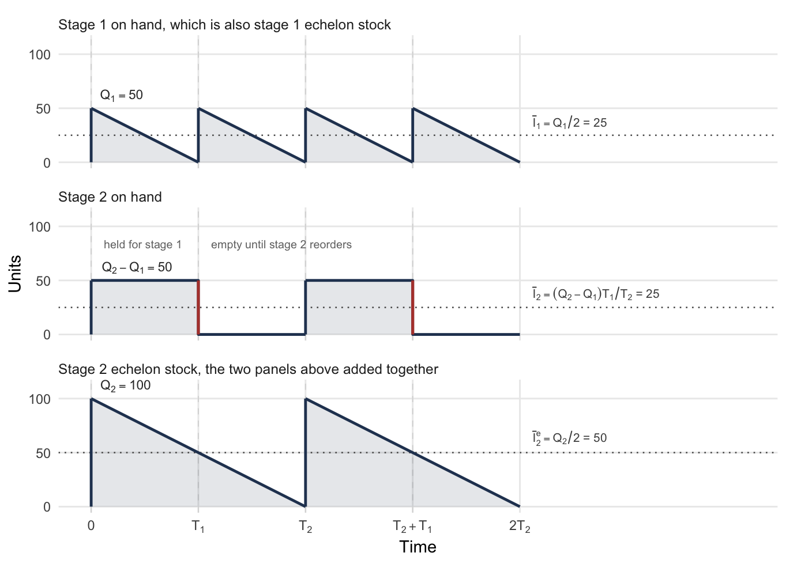
Following the on-hand stock. At the start of a cycle stage 2 orders \(Q_2 = \lambda T_2\) and, because the policy is nested, stage 1 simultaneously orders \(Q_1 = \lambda T_1 = \tfrac{1}{2}Q_2\), which ships immediately. Stage 2 is left holding \(Q_2 - Q_1 = \tfrac{1}{2}\lambda T_2\). It holds that amount for \(T_1\), until stage 1 reorders and takes the rest, after which stage 2 holds nothing for the remainder of the cycle. Its average on-hand cost rate is
\[ h_2\frac{\left(\tfrac{1}{2}\lambda T_2\right)T_1}{T_2} = \frac{1}{2}h_2\lambda T_1 \]
It is a rectangle of height \(\tfrac{1}{2}\lambda T_2\) and width \(T_1\), averaged over a cycle of length \(T_2\), the shaded block in the middle panel of Figure 4.2. Stage 1 is an ordinary sawtooth averaging \(\bar{I}_1 = Q_1/2\).
- Let \(\bar{I}_i\) represent the average on-hand stock at stage \(i\).
- Let \(\bar{I}^{\,e}_i\) represent the average echelon stock at stage \(i\).
Writing the two on-hand averages the way Figure 4.2 labels them,
\[ \bar{I}_1 = \frac{Q_1}{2} = \frac{\lambda T_1}{2}, \qquad \bar{I}_2 = \frac{(Q_2 - Q_1)T_1}{T_2} = \frac{\lambda T_1}{2} \tag{4.33}\]
The system pays \(h_1\bar{I}_1 + h_2\bar{I}_2\), which is
\[ \frac{1}{2}h_1\lambda T_1 + \frac{1}{2}h_2\lambda T_1 = \frac{1}{2}(h_1+h_2)\lambda T_1 \tag{4.34}\]
Following the echelon stock. Stage 2’s echelon stock starts the cycle at \(Q_2 = \lambda T_2\) and declines at rate \(\lambda\) to zero, i.e. a clean sawtooth over \(T_2\), because units shipped to stage 1 stay inside stage 2’s echelon. Notice in Figure 4.2 that the red transfer at \(T_1\) drops the middle panel to zero and lifts the top panel by the same amount. Thus, the bottom panel passes through \(T_1\) unbroken, and you should remember that mechanism. Its average is the third dotted line the figure marks:
\[ \bar{I}^{\,e}_2 = \frac{Q_2}{2} = \frac{\lambda T_2}{2} \tag{4.35}\]
Stage 1’s echelon stock is its on-hand stock, so that \(\bar{I}^{\,e}_1 = \bar{I}_1\). The system pays \(h'_1\bar{I}^{\,e}_1 + h'_2\bar{I}^{\,e}_2\), and with \(h'_2 = h_2\), \(h'_1 = h_1 - h_2\), and \(T_2 = 2T_1\), we obtain
\[ \frac{1}{2}(h_1-h_2)\lambda T_1 + \frac{1}{2}h_2\lambda T_2 = \frac{1}{2}(h_1-h_2)\lambda T_1 + \frac{1}{2}h_2\lambda(2T_1) = \frac{1}{2}(h_1+h_2)\lambda T_1 \tag{4.36}\]
the same total as Equation 4.34.
The arithmetic check. At the rates above, the three dotted lines in Figure 4.2 are 25, 25 and 50 units, and each cost term is a rate times one of them. Working both accountings side by side gives Table 4.11.
| Accounting | Term | Average | Rate | Cost rate |
|---|---|---|---|---|
| Installation | stage 1 | \(\bar{I}_1 = 25\) | \(h_1 = 2.00\) | $50.00 |
| stage 2 | \(\bar{I}_2 = 25\) | \(h_2 = 1.20\) | $30.00 | |
| total | $80.00 | |||
| Echelon | stage 1 | \(\bar{I}^{\,e}_1 = 25\) | \(h'_1 = 0.80\) | $20.00 |
| stage 2 | \(\bar{I}^{\,e}_2 = 50\) | \(h'_2 = 1.20\) | $60.00 | |
| total | $80.00 |
Both totals are \(\tfrac{1}{2}(h_1+h_2)\lambda T_1 = \tfrac{1}{2}(3.20)(100)(0.5) = \$80\) per year, as Equation 4.34 and Equation 4.36 require. You should perform that check every time echelon rates are introduced, because it catches a sign error in Equation 4.31 immediately.
Notice what differs. Installation accounting charges the two stages $50 and $30, while echelon accounting charges them $20 and $60. Echelon accounting moves cost upstream, because stage 2’s echelon stock includes what stage 1 is holding. Thus, echelon accounting reassigns cost between stages and preserves the total. That is the license to use it. No money is invented or lost, and in exchange one awkward rectangle becomes a sawtooth, so that every stage looks like an EOQ.
4.6.2 Serial Systems
With the accounting settled, we can write the problem down.
- Let \(n\) represent the number of stages in the chain, indexed by \(i\), so that stage 1 faces the customer and stage \(n\) orders from the outside supplier.
- Let \(k_i\) represent the fixed cost of placing an order at stage \(i\).
- Let \(g_i = \tfrac{1}{2}\lambda h'_i\) represent the holding cost coefficient at stage \(i\), by analogy with Equation 4.26. Every stage sees the same \(\lambda\), so no subscript is needed on it here; the distribution system of Section 4.6.3 is where that changes.
- Let \(T_i\) represent the reorder interval at stage \(i\).
Stage \(i\) holding echelon stock on a cycle of \(T_i\) therefore costs \(g_iT_i\) per unit time, and adding the ordering cost \(k_i/T_i\) at each stage gives
\[ \min \; \sum_{i=1}^{n}\left[\frac{k_i}{T_i} + g_iT_i\right] \tag{4.37}\]
subject to two restrictions:
\[ T_i = 2^{\ell_i}T, \qquad \ell_i = 0, 1, 2, \ldots \tag{4.38}\]
\[ T_i \ge T_{i-1} \ge 0 \tag{4.39}\]
Equation 4.38 is the power-of-two restriction of Section 4.5.2. Equation 4.39 is nestedness. That is, whenever a stage orders, every stage below it orders too, so no stage can replenish more often than the one it supplies. Nestedness keeps work in process from piling up between stages. Notice that with power-of-two intervals it comes for free, because any two powers of two divide one another.
The relaxation. We drop Equation 4.38 and keep Equation 4.39:
\[ (RP)\qquad \min \; \sum_{i=1}^{n}\left[\frac{k_i}{T_i} + g_iT_i\right] \qquad\text{s.t.}\qquad T_i \ge T_{i-1} \ge 0 \tag{4.40}\]
Without the nesting constraint each stage would separate and take \(T_i = \sqrt{k_i/g_i}\), which is Equation 4.27 stage by stage. Thus, the constraint binds exactly when those intervals fail to increase up the chain. One feature of the answer makes the problem solvable: stages that would violate the constraint are merged into a block and share one interval.
Blocks. We partition the chain into consecutive blocks.
- Let \(G_r\) represent the \(r\)th block of consecutive stages, with \(G_1\) holding the lowest-numbered stages, and let \(M\) represent the number of blocks.
- Let \(T(r)\) represent the interval shared by every stage in \(G_r\).
- Let \(k(G_r) = \sum_{i \in G_r}k_i\) and \(g(G_r) = \sum_{i \in G_r}g_i\) represent the block’s totals.
If every stage in block \(G_r\) shares the common interval \(T(r)\), then the terms for that block collapse into a single two-term function of \(T(r)\). Its solution is Equation 4.27 again with the block’s totals in place of one stage’s:
\[ T(r) = \sqrt{\frac{k(G_r)}{g(G_r)}} \tag{4.41}\]
A set of blocks solves Equation 4.40 when three conditions hold.
- Each block’s interval is given by Equation 4.41.
- The intervals increase, \(T(1) \le T(2) \le \cdots \le T(M)\), so that the solution is feasible.
- No block can be split into a lower part and an upper part whose ratio of block totals, \(k(\cdot)/g(\cdot)\), is larger in the upper part.
We dwell on the third condition. If such a split existed, then the upper part could lengthen its interval on its own and save money. Thus, a partition admitting such a split cannot be optimal, and Algorithm 4.1 is built to prevent one.
The algorithm. We walk up the chain, adding stages to the current block while doing so is forced, and starting a new block when the next stage wants a longer interval than the current block has.
<- is assignment and + on blocks is set union. The ratio \(k(G_r)/g(G_r)\) is the block total of Equation 4.41, so a block’s own interval is always \(\sqrt{k(G_r)/g(G_r)}\).
partition(stages 1 to n):
r <- 1 // index of the block being built
G_1 <- {1} // stage 1 opens the first block
for i = 2 to n:
if k(G_r)/g(G_r) <= k_i/g_i:
// stage i wants a longer interval: it stands alone
r <- r + 1
G_r <- {i}
else:
// stage i wants a shorter one, which is infeasible
// upstream, so the current block absorbs it
G_r <- G_r + {i}
// absorbing i lowered this ratio, so it may now sit
// below the block beneath and break condition 2
r <- merge(r)
return G_1 through G_r
merge(r):
s <- r
while s > 1 and k(G_{s-1})/g(G_{s-1}) > k(G_s)/g(G_s):
// the lower block wants the longer interval, so the two
// cannot stand apart: fold s into s-1 and retest
G_{s-1} <- G_{s-1} + G_s
s <- s - 1
return sNow consider what merge is for. Absorbing a stage changes the block’s totals, which can push its ratio below the block beneath it and break condition 2. merge walks back down the chain repairing that, folding adjacent blocks together until the ratios increase again. Notice that a single absorption can cascade, merging several blocks at once.
Example 4.9 (A five stage chain) A component passes through five stages, \(5 \to 4 \to 3 \to 2 \to 1\), at \(\lambda = 500\) units per year. The plant can act on replenishment once a week, so \(T = 1/52\) year.
| Stage \(i\) | 1 | 2 | 3 | 4 | 5 |
|---|---|---|---|---|---|
| \(k_i\) | $10 | $12 | $25 | $7 | $2 |
| \(h_i\) | $0.60 | $0.50 | $0.35 | $0.10 | $0.05 |
| \(h'_i = h_i - h_{i+1}\) | 0.10 | 0.15 | 0.25 | 0.05 | 0.05 |
| \(g_i = \tfrac{1}{2}\lambda h'_i\) | 25 | 37.5 | 62.5 | 12.5 | 12.5 |
| \(k_i/g_i\) | 0.400 | 0.320 | 0.400 | 0.560 | 0.160 |
Why the constraint binds. Taking each stage on its own gives intervals \(\sqrt{k_i/g_i}\) of 0.632, 0.566, 0.632, 0.748, and 0.400 years. These are not nondecreasing, so the schedule is infeasible: stage 2 would order less often than stage 1 supplies, and stage 5 less often than anything below it.
Running the algorithm.
| \(i\) | Current block ratio | \(k_i/g_i\) | Action |
|---|---|---|---|
| 2 | \(\frac{10}{25} = .400\) | \(\frac{12}{37.5} = .320\) | \(.400 > .320\), absorb: \(G_1 = \{1,2\}\) |
| 3 | \(\frac{22}{62.5} = .352\) | \(\frac{25}{62.5} = .400\) | \(.352 \le .400\), start \(G_2 = \{3\}\) |
| 4 | \(\frac{25}{62.5} = .400\) | \(\frac{7}{12.5} = .560\) | \(.400 \le .560\), start \(G_3 = \{4\}\) |
| 5 | \(\frac{7}{12.5} = .560\) | \(\frac{2}{12.5} = .160\) | \(.560 > .160\), absorb: \(G_3 = \{4,5\}\), then merge |
The merge: \(G_3\) now has ratio \(\frac{9}{25} = .360\), below \(G_2\)’s \(.400\), so the two combine into \(G_2 = \{3,4,5\}\) with ratio \(\frac{34}{87.5} = .389\). That exceeds \(G_1\)’s \(.352\), so the walk stops. The partition is
\[ G_1 = \{1, 2\}, \qquad G_2 = \{3, 4, 5\} \]
The relaxed intervals. From Equation 4.41,
\[ T(1) = \sqrt{\frac{22}{62.5}} = 0.5933 \text{ yr} = 30.9 \text{ weeks}, \qquad T(2) = \sqrt{\frac{34}{87.5}} = 0.6234 \text{ yr} = 32.4 \text{ weeks} \]
which are nondecreasing, so the solution is feasible, at a cost of $183.25 a year. The infeasible stage-by-stage solution would have cost $181.81, so nesting the chain costs 0.8%.
Rounding to powers of two. Apply Equation 4.28 to each block. For \(G_1\), \(2^{\ell} \ge 30.9/\sqrt{2} = 21.8\), so \(\ell \ge 4.45\) and \(\ell^{*} = 5\). For \(G_2\), \(2^{\ell} \ge 32.4/\sqrt{2} = 22.9\), so \(\ell \ge 4.52\) and again \(\ell^{*} = 5\). Both blocks land on \(2^{5} = 32\) weeks, at a total of $183.31, which is 0.03% above the relaxed solution.
The two blocks were distinguished by the relaxation and then rounded back together. That is not a failure of the method but a consequence of Equation 4.29: intervals within a factor of two of one another often round to the same power, and 30.9 and 32.4 weeks differ by 5%. When it happens the whole chain replenishes on one schedule, the strongest form of the coordination Section 4.5 was seeking.
4.6.3 Distribution Systems
Now we reverse the geometry. A central warehouse supplies several regional warehouses.
- Let index 0 denote the central warehouse, and let indices 1 through \(n\) denote the regional warehouses.
- Let \(\lambda_i\) represent the demand rate faced by regional warehouse \(i\), so that \(\lambda_0 = \sum_{i \ge 1}\lambda_i\) passes through the center.
Recall from Section 4.6.1 that the echelon stock of a location is everything at that location together with everything downstream of it. The echelon stock of the central warehouse is therefore everything in the system, i.e. its own on-hand plus all of the regional on-hand. Its echelon rate is its installation rate, \(h'_0 = h_0\), and each regional warehouse is charged only what it adds:
\[ h'_i = h_i - h_0, \qquad i = 1, 2, \ldots, n \tag{4.42}\]
With \(g_i = \tfrac{1}{2}\lambda_ih'_i\), which carries each location’s own demand rate instead of the single \(\lambda\) a serial chain shares, the problem looks like Equation 4.37 with the index starting at 0. However, the nesting constraint runs the other way:
\[ T_0 \ge T_i \ge 0, \qquad i = 1, 2, \ldots, n \tag{4.43}\]
Recall that in a chain a stage cannot order more often than the stage it supplies. Here the central warehouse supplies everyone, so nothing downstream may wait longer than the center. That is, a regional warehouse ordering less often than the center would leave stock sitting at the center with nowhere to go. Thus, Equation 4.43 caps each regional interval at \(T_0\) instead of ordering the regions among themselves.
The shape of the answer. Relaxing the power-of-two restriction leaves a problem whose solution splits the regional warehouses into two groups. Those whose unconstrained interval \(\sqrt{k_i/g_i}\) is short enough keep it and order on their own schedule. Those that would have wanted a longer interval than the center can offer are pinned to the center’s interval and nested with it.
- Let \(\mathcal{C}^{0}\) represent the pinned set, consisting of the central warehouse together with every region sharing its interval.
Building \(\mathcal{C}^{0}\). We relabel the regional warehouses in ascending order of \(k_i/g_i\), so that \((1)\) wants the shortest interval and \((n)\) the longest. We then work down from \((n)\), adding a warehouse to \(\mathcal{C}^{0}\) only when leaving it out would be infeasible. Adding warehouse \(i\) changes the center’s interval to the pooled value
\[ T_0 = \sqrt{\frac{\sum_{j \in \mathcal{C}^{0}}k_j}{\sum_{j \in \mathcal{C}^{0}}g_j}} \tag{4.44}\]
The test at each step compares warehouse \(i\)’s own ratio against the pooled ratio of everything already in \(\mathcal{C}^{0}\). If \(k_i/g_i\) is larger, then warehouse \(i\) standing alone would want a longer interval than the center has, violating Equation 4.43, and it must join. We stop at the first warehouse for which \(k_i/g_i\) is smaller, since that warehouse and everything below it can be left alone. If even \((n)\) fails the test at the start, then \(\mathcal{C}^{0}\) is empty and every location takes \(\sqrt{k_i/g_i}\).
Notice that this is a scan, not a search. One pass down the list suffices only because the regions were sorted first, so an implementation of this algorithm sorts once and then never looks backward.
Example 4.10 (A central warehouse and six regions) Six regional warehouses each face \(\lambda_i = 200\) units per year, so the center sees \(\lambda_0 = 1{,}200\). Replenishment decisions are made weekly, \(T = 1/52\) year.
| \(i\) | 0 | 1 | 2 | 3 | 4 | 5 | 6 |
|---|---|---|---|---|---|---|---|
| \(k_i\) | $500 | $100 | $125 | $110 | $150 | $75 | $90 |
| \(h_i\) | $10 | $15 | $12 | $20 | $18 | $20 | $17 |
| \(h'_i\) | 10 | 5 | 2 | 10 | 8 | 10 | 7 |
| \(g_i\) | 6,000 | 500 | 200 | 1,000 | 800 | 1,000 | 700 |
| \(k_i/g_i\) | .0833 | .200 | .625 | .110 | .1875 | .075 | .1286 |
Relabel. Sorting the regions by \(k_i/g_i\) puts them in the order \(5, 3, 6, 4, 1, 2\), which become \((1)\) through \((6)\):
| New label | (1) | (2) | (3) | (4) | (5) | (6) |
|---|---|---|---|---|---|---|
| Was | 5 | 3 | 6 | 4 | 1 | 2 |
| \(k_i\) | $75 | $110 | $90 | $150 | $100 | $125 |
| \(g\) | 1,000 | 1,000 | 700 | 800 | 500 | 200 |
| \(k_i/g_i\) | .075 | .110 | .1286 | .1875 | .200 | .625 |
Build \(\mathcal{C}^{0}\), starting from \(\mathcal{C}^{0} = \{0\}\) with pooled ratio \(500/6{,}000 = .0833\):
| Step | Candidate | Its \(k_i/g_i\) | Pooled \(k(\mathcal{C}^{0})/g(\mathcal{C}^{0})\) | Action |
|---|---|---|---|---|
| 1 | (6) | .625 | \(\frac{500}{6000} = .0833\) | larger, add |
| 2 | (5) | .200 | \(\frac{625}{6200} = .1008\) | larger, add |
| 3 | (4) | .1875 | \(\frac{725}{6700} = .1082\) | larger, add |
| 4 | (3) | .1286 | \(\frac{875}{7500} = .1167\) | larger, add |
| 5 | (2) | .110 | \(\frac{965}{8200} = .1177\) | smaller, stop |
So \(\mathcal{C}^{0} = \{0, (3), (4), (5), (6)\}\) and regions \((1)\) and \((2)\) are left alone. From Equation 4.44,
\[ T_0 = \sqrt{\frac{965}{8{,}200}} = 0.3430 \text{ yr} = 17.8 \text{ weeks} \]
shared by the center and four regions, while \((2)\) takes \(\sqrt{.110} = 0.3317\) yr \(= 17.2\) weeks and \((1)\) takes \(\sqrt{.075} = 0.2739\) yr \(= 14.2\) weeks.
Rounding. For the center, \(2^{\ell} \ge 17.8/\sqrt{2} = 12.6\), so \(\ell \ge 3.66\) and \(\ell^{*} = 4\), giving \(2^{4} = 16\) weeks. Region \((2)\) needs \(2^{\ell} \ge 12.2\) and region \((1)\) needs \(2^{\ell} \ge 10.1\); both give \(\ell^{*} = 4\) as well.
Every location ends up on a sixteen-week cycle. As in Example 4.9, the relaxation distinguished three different intervals and the power-of-two rounding put them back together, because all three fell in the same rounding band. By Equation 4.28 the choice \(\ell^{*} = 4\) covers every interval from \(8\sqrt{2} = 11.3\) weeks to \(16\sqrt{2} = 22.6\) weeks, and 14.2, 17.2 and 17.8 all sit inside it. The system is fully synchronized, and the construction of \(\mathcal{C}^{0}\) was still what proved the schedule optimal rather than merely convenient.
4.7 Building These Models in a Worksheet
Recall that Section 3.10 built a worksheet for a single item, and that its layout followed the shape of the mathematics: inputs in one block, quantities derived from them in a second, and two output blocks evaluating the same rows first at a quantity someone typed and then at \(Q^{*}\). That layout worked because the decision was one number.
Every model in this chapter breaks that assumption, and the workbook that accompanies it, Chapter4Models.xlsx, carries one sheet per model. The decision is a vector, the items are tied together by something that belongs to none of them, and two of the models are algorithms, not formulas. Each of those changes forces the implementation into a different shape.
In the sections that follow we work through the models one at a time, in the order the chapter introduced them, showing how each piece of the mathematics becomes a piece of a worksheet. We build a worksheet first because everything in it is visible: a formula is a cell you can click on, and a layout is an argument about the model that you can see. Section 4.8 then asks the same question of a program, where nothing is visible and the structure has to be designed instead of looked at.
4.7.1 The Constrained Problem
Recall what we have to compute. Each item has an unconstrained quantity from Equation 3.17. The resource those quantities consume is compared against the limit. If the limit binds, a multiplier is found by bisection on Equation 4.6, and every quantity is recomputed from Equation 4.5 at that multiplier.
The blocks. We take them in the order the sheet reads, which Table 4.17 gives.
| Rows | Block | What it holds |
|---|---|---|
| 5 to 7 | Inputs | the carrying charge, the limit \(A\), and a selector reading Budget or Space |
| 10 to 11 | Does the limit bind? | the resource the unconstrained quantities would consume, and the verdict |
| 14 to 18 | Solve | the multiplier, \(R(\theta)\), and whether it has been driven to zero |
| 22 to 27 | Results | the same six quantities unconstrained and constrained |
| 30 to 32 | What the limit cost | a difference, a percentage, and the investment released |
| 35 to 38 | Check | what the shipped data should produce |
| 43 onward | Item data | one row per item |
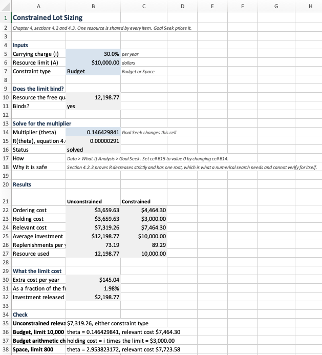
Read Figure 4.3 from the top down and it follows the order of Section 4.2. The verdict sits above the multiplier and not below it, because Section 4.2.1 says an unconstrained solution already inside the limit is the answer and nothing further needs solving. Notice also that four columns hold the whole of it. Everything that is one number about the problem, and not one number about an item, lives here, and there are not many such numbers.
The cells that carry the mathematics. We translate them cell by cell in Table 4.18. Read the last column first: every row of the table is one line of Section 4.2 rewritten in a language Excel evaluates.
| Cell | Holds | Formula | Which result it is |
|---|---|---|---|
B10 |
resource the free quantities consume | =SUMPRODUCT(Con_a,Con_Qfree) |
the left side of Equation 4.2 at \(Q_j^{*}\) |
B11 |
does the limit bind | =IF(B10>B6,"yes","no") |
the test of Section 4.2.1 |
B15 |
\(R(\theta)\) | =IF(B11="no",0,SUMPRODUCT(Con_a,Con_Qheld)-B6) |
Equation 4.6, driven to zero |
C22 |
constrained ordering cost | =SUMPRODUCT(Con_k,Con_NHeld) |
\(\sum_j k_j\lambda_j/Q_j(\theta)\) |
C23 |
constrained holding cost | =SUMPRODUCT(Con_h,Con_Qheld)/2 |
\(\sum_j h_jQ_j(\theta)/2\) |
C25 |
constrained investment | =SUMPRODUCT(Con_c,Con_Qheld)/2 |
the quantity the budget limits |
Notice what every formula in that table has in common. None of them names a cell in the item block. Con_a, Con_Qheld and the rest are named ranges spanning a hundred rows, so the summaries do not know, and do not need to know, how many items there are. Figure 4.4 shows the same block with its formulas displayed, the quickest way to see that the pattern holds everywhere and not only in the six cells quoted above.
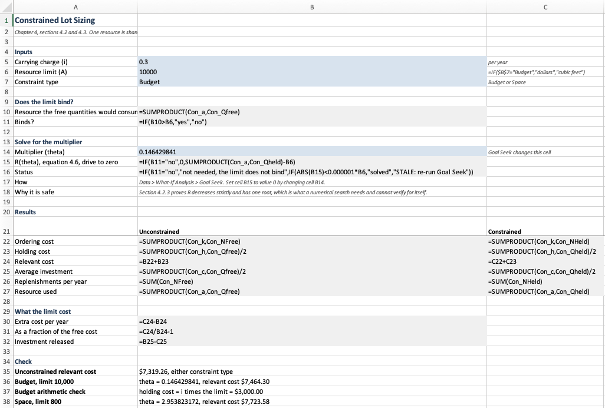
One discipline that is not obvious. We make every summary either a SUM of one column or a SUMPRODUCT of several. It never divides one range by another. Dividing would ask Excel to evaluate zero over zero on every empty row inside a hundred-row range, and the cell returns an error instead of a number. Thus, where a ratio per item is genuinely needed, and replenishments per year is the only such case here, the ratio gets its own column and the summary sums it. Thus, C22 multiplies \(k_j\) by a column of frequencies instead of dividing \(k_j\lambda_j\) by a column of quantities.
The search is a button, and you should know why that is safe. Rows 14 to 18 hold the multiplier, \(R(\theta)\), and a status cell. Goal Seek drives the second to zero by changing the first.
Goal Seek is a numerical search that carries no guarantee of finding a root, or of finding the one you wanted. What makes it dependable here is not the software. Recall from Section 4.2.3 that \(R(\theta)\) decreases strictly and therefore has exactly one root. A search cannot establish that for itself, and a reader who reaches for the button without the proof behind it is trusting a tool to be right about a function it has not examined.
One property of the design deserves the caution. Goal Seek does not re-run by itself, so changing a demand rate leaves a stale multiplier with every result below it confidently wrong. The status cell exists for that, and you should watch it and not the numbers.
The item data goes last. We come to the layout decision that matters most, and it is not about tidiness.
The decision in this model is a vector, \(Q_1, \ldots, Q_n\), so the natural representation is a table whose rows are items. A table that rows are added to can only grow downward, and it can only grow downward if nothing sits beneath it. Put the item block in the middle, between the multiplier and the results, and every added item pushes two other blocks down and silently widens or breaks the ranges that point at it. Put it last and adding an item is typing in the first empty row.
Table 4.19 gives the columns.
SUM or a SUMPRODUCT over these, reached by name.
| Column | Holds | Formula in row 43 |
|---|---|---|
| A to E | name, \(\lambda_j\), \(c_j\), \(k_j\), \(v_j\) | typed |
| F | \(h_j = ic_j\) | =$B$5*C43 |
| G | \(a_j\) | =IF($B$7="Budget",C43/2,E43) |
| H | \(Q_j^{*}\) | =SQRT(2*D43*B43/F43) |
| I | \(Q_j(\theta)\) | =SQRT(2*D43*B43/(F43+2*$B$14*G43)) |
| J, K | replenishments per year at each quantity | =B43/H43, =B43/I43 |
| L | \(Q_j(\theta)/Q_j^{*}\) | =I43/H43 |
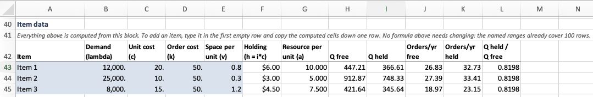
Read column I of Figure 4.5 against Equation 4.5 and the correspondence is exact. D43 and B43 are \(k_j\) and \(\lambda_j\), F43 is \(h_j\), G43 is \(a_j\), and $B$14 is \(\theta^{*}\). Notice that only the last of those is written with dollar signs. Every formula in the column is the same formula copied down, and the dollar signs are what decide whether copying it changes it. Dollar signs are the spreadsheet’s only mechanism for saying what belongs to an item and what belongs to the problem, and you should learn to read them as a statement about the model.
The multiplier belongs to no item. It appears in every row of column I and is not a property of any of them. It is one number describing the whole problem, and the layout says so by putting it in a single cell above the table.
You could instead give it a column of its own, repeated once per item. The sheet would still calculate correctly, and it would have stopped telling the truth about the model.
The coefficient is data, not structure. Column G is the only thing that distinguishes a budget constraint from a space constraint. Recall that Equation 4.2 says both are \(\sum_j a_jQ_j \le A\) with different coefficients. The worksheet holds \(a_j\) in a column and lets one cell choose what goes in it. The alternative, two worksheets differing in one formula, would have to be corrected twice every time anything else changed.
The evaluator and the optimizer, again. Rows 22 to 32 are the last two blocks of Section 3.10 in new clothing. There the sheet reported one quantity’s cost at a typed \(Q\) and at \(Q^{*}\), and the rows between them measured the penalty. Here the two columns are the portfolio unconstrained and constrained, and the same rows measure the price of the limit. The pattern survived because the question survived. What changed is only what is being compared.
4.7.2 The Exchange Curve
The constrained problem had one multiplier, fixed by the limit. The exchange curve of Section 4.4 has no limit at all, and sweeps the multiplier to trace what is reachable. That single change moves the multiplier from a cell to a column, and we take the why before the how.
What a sheet puts in a cell, and what it puts in a column. In Section 4.7.1 the multiplier described the problem, so it lived in one cell and every formula pointed at it absolutely. Here the multiplier is the thing being varied, so it runs down a column and every other quantity becomes a column beside it. Thus, the layout is decided by a question about the model and not about convenience: is this quantity one fact about the problem, or is it the axis?
Get this backwards and the sheet still computes. For example, a multiplier repeated in a column in Section 4.7.1 would produce identical numbers while asserting, falsely, that each item has its own shadow price. A single multiplier cell here would produce one point and no curve.
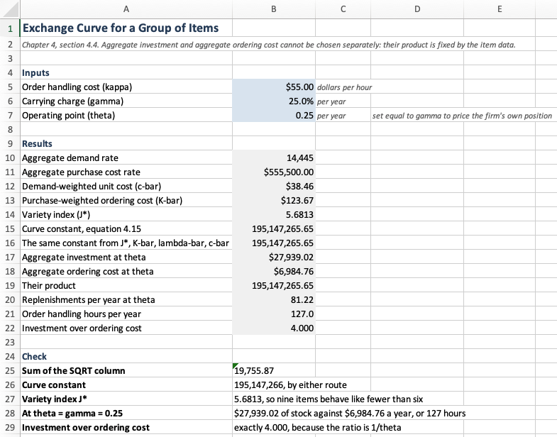
Figure 4.6 shows the results. Notice that the constant of Equation 4.18 appears twice, at rows 15 and 16, computed two different ways. The first squares the sum of the item column, and the second multiplies the variety index by the three averages. They agree to the cent, and that agreement is the arithmetic check for this sheet.
| Cell | Holds | Formula | Which result it is |
|---|---|---|---|
B13 |
purchase-weighted ordering cost | =SUMPRODUCT(Exc_k,Exc_c,Exc_lambda)/B11 |
\(K^{w}\) of Equation 4.18 |
B14 |
variety index | =SUMPRODUCT(Exc_root)^2/SUMPRODUCT(Exc_k,Exc_c,Exc_lambda) |
Equation 4.19 |
B15 |
the curve constant | =SUMPRODUCT(Exc_root)^2/2 |
Equation 4.18 |
B16 |
the same constant, decomposed | =B14*B13*B10*B12/2 |
Equation 4.22 |
B17 |
aggregate investment | =SUMPRODUCT(Exc_c,Exc_Q)/2 |
\(\bar{I}^{a}\) |
B18 |
aggregate ordering cost | =SUMPRODUCT(Exc_k,Exc_N) |
\(\overline{\mathit{OC}}^{a}\) |
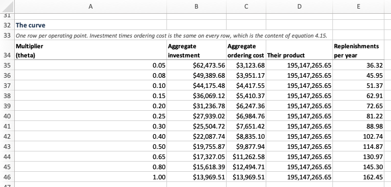
Figure 4.7 is the curve itself. Notice that it is not the output of a search. Equation 4.14 says the product of the two aggregates is a constant fixed by the item data, so each row evaluates a closed form and the shape is known before any row is filled in. Column D exists to show that: it is the same value, twelve times.
Notice also that we never divide one item column by another here. Each is a SUMPRODUCT of square roots, Equation 4.17 rearranged so the multiplier comes out as a scalar. The fifth column, replenishments per year, could not be written that way, since an item’s order frequency divides by its own ordering cost. Thus, it takes the same route the constrained sheet took: a per-item column doing the division, and a summary that multiplies a scalar by its sum.
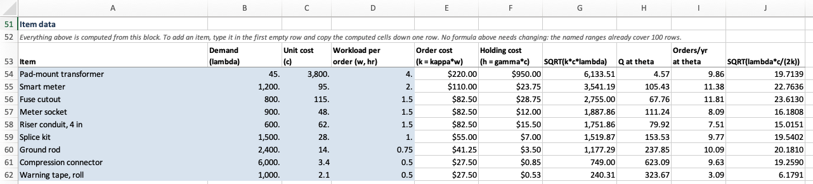
Figure 4.8 carries nine items, against three on the constrained sheet, and nothing above it changed to accommodate them. The named ranges are doing that work.
4.7.3 Intervals and Rounding
Joint replenishment is the first model in this chapter whose answer is not a vector of quantities. Recall from Section 4.5.1 that it is a base period \(T\), which is continuous, together with a multiplier \(m_j\) for each item, an integer. A worksheet has to carry both, and they behave differently: the base period is one cell an optimizer changes, and the multipliers are columns that recompute themselves every time that cell moves.
One continuous decision. The base period is the only continuous decision, because Equation 4.25 says the multipliers separate once \(T\) is fixed. That is, the whole problem is one-dimensional, so Solver has exactly one cell to change under each rule.
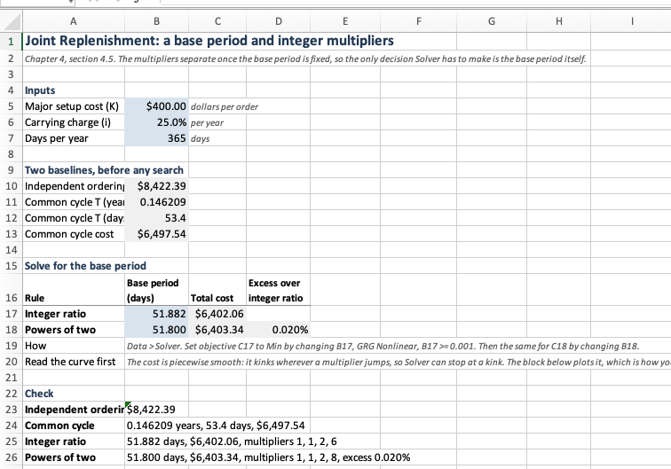
Notice in Figure 4.9 that the two rules have separate base period cells. They reach different optima, 51.882 days against 51.800, so one cell could not serve both.
C17 adds the major setup once and sums a per-item column, rather than dividing anything by a column of multipliers.
| Cell | Holds | Formula | Which result it is |
|---|---|---|---|
B10 |
independent ordering | =SUMPRODUCT(SQRT(2*($B$5+Jnt_k)*Jnt_h*Jnt_lambda)) |
each item paying \(K + k_j\) alone |
B11 |
common cycle \(T^{*}\) | =SQRT(($B$5+SUM(Jnt_k))/SUM(Jnt_g)) |
Equation 4.24 |
C17 |
cost at the integer-ratio base period | =$B$5/(B17/$B$7)+SUM(Jnt_cost_int) |
Equation 4.23 |
H56 |
an item’s integer multiplier | =MAX(1,CEILING((-1+SQRT(1+4*(G56/($B$17/$B$7))^2))/2,1)) |
the integer nearest Equation 4.25 |
J56 |
an item’s power-of-two multiplier | =2^MAX(0,CEILING(LOG(G56/(SQRT(2)*($B$18/$B$7)),2),1)) |
Equation 4.28 |
D18 |
what nesting costs | =C18/C17-1 |
the bound of Equation 4.30, measured |
The formula in H56 looks worse than it is. The integer minimizing Equation 4.23 for one item is the \(m\) with \(m(m-1) \le (T_j^{*}/T)^2 \le m(m+1)\), and solving that pair of inequalities for \(m\) gives exactly the expression in the cell. Thus, no cell has to evaluate the cost at two candidate multipliers and keep the smaller.
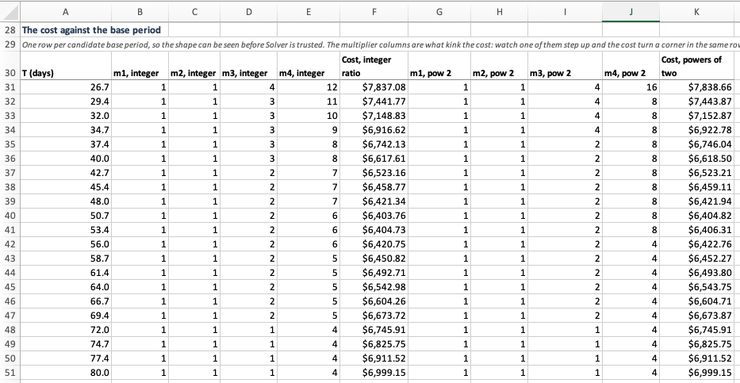
Notice in Figure 4.10 that the curve is not how the answer is found. Solver finds it, by changing one cell. The curve is there because the objective is piecewise smooth: it kinks wherever a multiplier jumps, so a hill climber can halt at a kink instead of at the minimum. Thus, plotting the objective before optimizing it is not decoration here, it is the only evidence available that Solver stopped in the right basin.
We carry one contrast away from these two sections. In Section 4.7.1 the search is a button and nothing is plotted, because Section 4.2.3 proves the function has one root. Here the search is also a button, and the plot is mandatory, because no such proof exists. What decides whether you may trust an optimizer is a property of the function, and it is established in the chapter, not in the sheet.
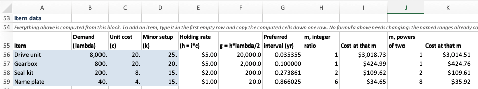
Notice in Figure 4.11 that the drive unit and the gearbox both sit at a multiplier of one under both rules. Their preferred intervals, 13 and 37 days, are shorter than the base period, so nothing about them is rounded and what sets their cost is the choice of base period alone. It is the first qualification of Section 4.5.3, visible in two cells.
Where the item block cannot carry the work. Every summary above the item block on this sheet reaches it through a named range, so it does not care how many items there are. The curve cannot. Each row needs the multipliers at that row’s base period, and a multiplier is a rounding, which no arithmetic over a whole column will produce.
Two ways out present themselves, and we state the choice between them because the rest of this section keeps making it. One is to compute the rounding over the whole column inside a single formula, compact and independent of the item count. The other is to give each item its own column and compute the rounding one item at a time, longer but showing the reader something the first hides.
The second is what the sheet does, and the multiplier columns of Figure 4.9 are the reason. Watch the last one step down from 6 to 5 as the base period lengthens, and the cost column turns a corner in the same row. The kink is made visible there, and it justifies plotting the curve at all. A formula that hid the multipliers would have hidden the very thing the block exists to show.
The cost is a column per item, so a fifth item means a column in each of the two groups. The distribution scan in Section 4.7.4 makes the same admission, and we state it plainly: the item block grows by a row, and a calculation that works item by item grows with it.
4.7.4 The Two Echelon Structures
The echelon models of Section 4.6 differ from everything before them in that we must fix the accounting before any optimization is possible. Recall from Equation 4.31 that an echelon rate is a difference between neighbors. That is, no location can compute its own, and the sheet has to know the structure before it can charge anybody.
The distribution algorithm suits a worksheet and the serial one does not. The scan of Section 4.6.3 has a fixed number of steps known in advance, one per region, and each step depends only on the one before it. That is a table.
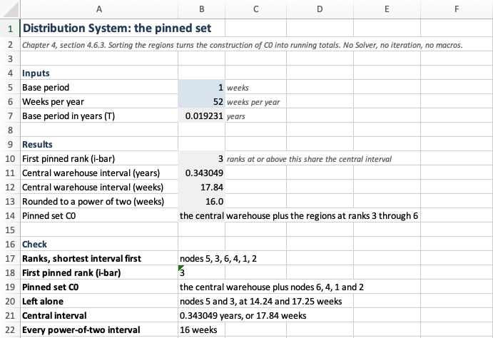
INDEX(...,1) rather than by a row number, so reordering the regions does not break the sheet.
| Cell | Holds | Formula | Which result it is |
|---|---|---|---|
E42 |
echelon rate \(h'_i\) | =IF(A42=INDEX(Dis_node,1),D42,D42-INDEX(Dis_h,1)) |
Equation 4.42 |
G42 |
the ratio \(k_i/g_i\) | =C42/F42 |
what the regions are sorted on |
F32 |
pooled \(k\) of the set so far | =INDEX(Dis_k,1)+SUMIF($A$32:$A$37,">"&A32,$C$32:$C$37) |
the running total of the scan |
I32 |
the verdict at this step | =IF(E32>H32,"add","stop") |
the test of Section 4.6.3 |
B10 |
first pinned rank | =MAX(J32:J37)+1 |
where the scan stopped |
B13 |
the rounded central interval | =2^MAX(0,CEILING(LOG(B11/(SQRT(2)*$B$7),2),1))*$B$7*$B$6 |
Equation 4.28 |
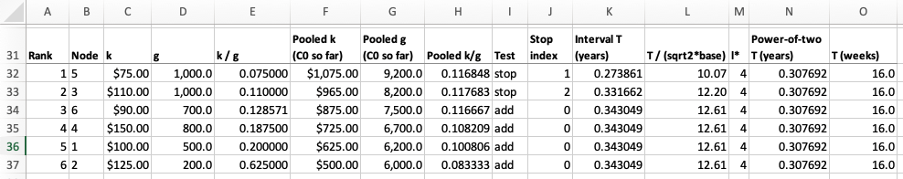
Figure 4.13 reproduces Table 4.16 row for row, and that is the point of the block. The pooled columns are running totals, so the sheet needs no iteration, no Solver and no macro. The serial partition has none of those properties: the number of blocks is not known until the walk is finished, and a merge changes blocks already built. There is therefore no serial worksheet in the accompanying workbook, and the absence is an answer, not an omission.
One row per region is also one row to add. Every summary above the block reaches it by name and does not care how many locations there are, but the scan cannot be written that way, because each step needs the pooled totals of the step before it. Thus a seventh region means a row in the location block and a row in the scan, and the sheet says so instead of hiding it.
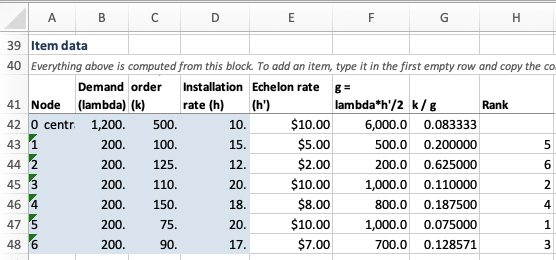
Notice in Figure 4.14 that the rank column is blank on the central warehouse row. Ranking is over the regions alone, because the scan works down from the region wanting the longest interval and the center is what they are being compared against, not a candidate itself.
4.7.5 What a Worksheet Can and Cannot Do
Three questions were answered four times each in the preceding sections. Having seen every instance, we can state them.
Is this a property of an item, or of the problem? The multiplier is one cell. The volume \(v_j\) is a column. Getting this wrong costs nothing arithmetically, and that is exactly what makes it dangerous: a multiplier repeated down a column computes the same numbers while asserting that each item has its own shadow price. Thus, the test is not whether the numbers come out, but whether the layout still describes the model.
Is this difference data, or a different sheet? A budget limit and a space limit differ in one column, so Equation 4.2 is implemented once and column G holds \(a_j\). Two sheets differing in one formula would have to be corrected twice forever after. Notice that the same question has a harder answer for the coordination rules of Section 4.5.1, where the alternatives differ in what has to be done and not in a number, so the joint sheet carries two base period cells and two sets of multiplier columns instead of one of each with a switch.
When may a button be trusted? Twice in these sheets a search is a button, and the two cases are not alike. Goal Seek is safe in Section 4.7.1 because Section 4.2.3 proves \(R(\theta)\) strictly decreasing with exactly one root. For example, Solver is not safe in Section 4.7.3, because the objective kinks wherever a multiplier steps, so that sheet plots the curve and the other does not. What decides whether an optimizer may be trusted is a property of the function, and it is established in the chapter, not on the sheet.
Where a worksheet stops. Three limits appeared, each in its place. It cannot bracket its own root or widen its own search, so it asks the reader to have established in advance what a program arranges in a loop. It cannot hold a structure whose size is not known until the computation finishes, so Algorithm 4.1 has no sheet. And it cannot be audited at three thousand items: every argument in this section about what the layout asserts depends on a person being able to see the layout.
None of that makes the worksheets inferior. They are better at the thing they are for, making a method visible. Figure 4.10 shows what a one-dimensional search over a base period is, and no loop shows that. What a worksheet cannot do is what Section 4.8 is for.
4.8 Designing the Software
In Section 4.7 we built each model as a worksheet. The layout of a worksheet is visible. A formula is a cell you can click on, a summary is a range you can highlight, and putting the multiplier in a single cell says that it belongs to the problem and not to any item.
A program shows none of that. Its structure is a set of decisions about which classes exist and what each class is responsible for, and those decisions leave no trace in the finished code. We therefore write them down first.
The analysis proceeds in the order such an analysis always does: what the software must do, what the domain calls things, what each thing knows and does, how the things are related, and how they collaborate to produce an answer. Code appears at the end of each step, by which point little is left to decide.
The effort pays off because the five models share more than they appear to. A programmer who writes the constrained problem, then the exchange curve, then joint replenishment, without pausing between them, will write Equation 4.5 three times. Thus, when the third one is wrong there are three places to correct.
4.8.1 What the Software Must Do
We begin with a list of requirements. Each entry names something a user would ask the software for, together with the section of this chapter that supplies the answer.
| # | The software must | Established in |
|---|---|---|
| R1 | compute each SKU’s order quantity ignoring any coupling | Chapter 3 |
| R2 | report an aggregate measure of a set of decisions | Section 4.1 |
| R3 | decide whether a stated limit on a measure binds | Section 4.2.1 |
| R4 | find the cheapest decisions meeting a limit, and report its shadow price | Section 4.2.2 |
| R5 | price a limit against having none | Section 4.3 |
| R6 | trace the frontier of achievable aggregate positions | Section 4.4 |
| R7 | schedule SKUs sharing one setup, under a stated ordering practice | Section 4.5 |
| R8 | restrict intervals to what an operation can run, and price the restriction | Section 4.5.3 |
| R9 | account for holding cost across locations without double counting | Section 4.6.1 |
| R10 | find reorder intervals across a chain or a distribution network | Section 4.6.2 |
Two features of Table 4.23 matter more than the list itself.
Notice that R3, R4 and R5 do not mention a budget. They name a limit on a measure. Recall from Section 4.1 that an organization runs short of four different things, and that Section 4.2 then solved for one of them. A design that treats the budget as the problem, and the other three as variations on it, carries that assumption into every signature it writes.
A requirement is also not a class. R7 says to schedule SKUs sharing one setup. That sentence names two candidate things, a group of SKUs and a schedule, and it does not say whether either one is an object. For example, turning requirements straight into classes is how software acquires a ScheduleManager.
A requirement says what the software does. A scenario says who asks, and in what order.
| # | Scenario | The question behind it |
|---|---|---|
| S1 | solve under a limit | “Management will fund $10,000 of stock. What do I order?” |
| S2 | price the limit | “What is that ceiling costing me?” |
| S3 | trace the frontier | “If I want fewer orders, how much more stock is that?” |
| S4 | coordinate a supplier’s line | “These four come on one truck. How often do I order each?” |
| S5 | plan a network | “The depot feeds six branches. What interval does each run?” |
S1 and S3 of Table 4.24 repay attention. “What do I order under a ten thousand dollar limit” and “if I want fewer orders, how much more stock is that” sound like two programs. Section 4.4 showed that they are one piece of mathematics asked from two ends. If the analysis is sound, the two will use the same objects and nearly the same messages, and we check that in Section 4.8.8.
4.8.2 Finding the Nouns
The candidate classes are the nouns of the domain, and the test for keeping one is whether somebody who runs a stockroom would use the word. That test is not a matter of taste. A name taken from the domain survives changes in the mathematics, because the domain is what the mathematics describes. A name invented to suit an implementation has to be renamed every time the implementation moves.
| Term | What it means |
|---|---|
| SKU | a stock keeping unit: one item held at one location, and the thing that gets replenished |
| Portfolio | the SKUs that are decided together |
| Aggregate measure | a number computed over a whole plan: investment, space occupied, replenishment workload, relevant cost |
| Constraint | an aggregate measure together with the ceiling management has put on it |
| Replenishment plan | how much and how often, for every SKU in a portfolio |
| Order family | SKUs sharing a supplier, a truck or a machine setup, so that one order serves several |
| Interval rule | what intervals the operation can actually run |
| Supply network | SKUs that replenish one another, whether in a chain or from a center |
| Echelon holding rate | the value a location adds, as against the value accumulated through it |
Four other nouns suggest themselves. None of them survives the test.
The shadow price is a number that a solution reports. A class for it would know nothing beyond its own value and would do nothing, so it becomes a property of a replenishment plan. Recall from Section 4.3 that the price falls to zero exactly where the limit stops binding. Thus, the mathematics has no missing case and the property need not be nullable.
Echelon stock is defined in Section 4.6.1, and what it defines is a measure of a network. It belongs with investment and space, not with SKUs and plans.
Item and stage are one noun. A SKU already is an item at a location. Section 4.2 holds many SKUs at one location and Section 4.6 holds one item across many locations. That is, one entity under two topologies. Two classes would duplicate every field and force a conversion between the sections.
Shared resource is the instructive rejection, because Section 4.1 uses the phrase. A budget, a floor and a receiving dock are all things that several SKUs compete for. As a class name it fails the test. Nobody in a warehouse has a shared resource. They have a working capital account, a building with pallet positions, and a purchasing department that processes so many orders a week. The word that does pass is measure, since each of those is a number we can compute about a plan and put a ceiling on.
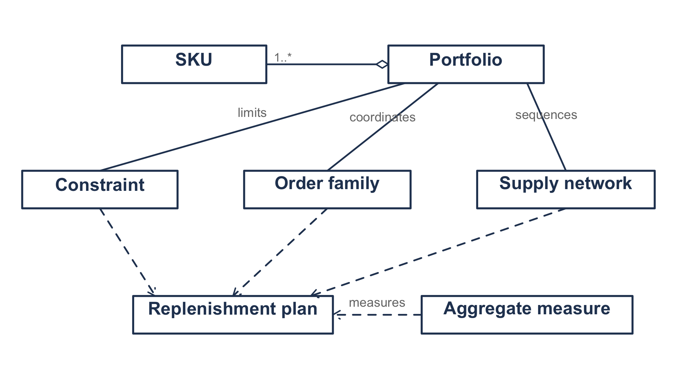
Figure 4.15 illustrates the concepts and how they relate. Read it as sentences. A portfolio is one or more SKUs. A constraint limits a portfolio, an order family coordinates one, and a supply network sequences one. The dashed arrows say that all three produce a replenishment plan, and an aggregate measure measures that plan.
Figure 4.15 carries no operations, no types and no direction of dependency. It is a conceptual model and not yet a design. Every argument in the rest of this section asks whether the code still says what this picture says.
4.8.3 What Each Thing Knows and Does
We describe each candidate class before drawing it. The traditional form is a class-responsibility-collaborator card, one index card per candidate, with three questions on it. What does it know? Who does it know? What does it do?
The size of the card does the work. A responsibility that will not fit on one card is usually two responsibilities, and a card with no collaborators is either a value or a mistake.
| Class | Knows | Knows about | Does |
|---|---|---|---|
SKU |
label, demand rate, unit value, order cost, holding rate | nobody | its economic order quantity; its cost at a quantity; the interval it would prefer |
Portfolio |
its SKUs, in a fixed order | SKU |
hands out its SKUs; builds a plan from one quantity each |
AggregateMeasure |
its name and unit | ReplenishmentPlan |
measure a plan |
ConstrainableMeasure |
whatever its kind knows | SKU |
its marginal at a SKU; the quantity a SKU takes at a price |
Constraint |
a measure, a ceiling | AggregateMeasure |
whether a plan meets it; the slack |
ReplenishmentPlan |
a quantity per SKU, and the price that produced it | SKU, AggregateMeasure |
report any measure of itself; compare itself with another plan |
ConstrainedLotSizing |
a portfolio, a constraint, a method | all three | the cheapest plan meeting the limit; whether it binds |
LotSizingMethod |
whatever its kind needs | Portfolio, Constraint |
produce that plan |
ExchangeCurve |
a portfolio | Portfolio, AggregateMeasure |
the plan at a price; the curve over prices; the variety index |
OrderFamily |
a portfolio, the major setup | Portfolio, IntervalRule |
a plan under a rule; what independent ordering would cost |
IntervalRule |
its base period | nobody | turn a preferred interval into one that can be run |
SupplyNetwork |
its SKUs, and who supplies whom | SKU, IntervalRule |
the echelon rate of a location; the plan |
Three rows of Table 4.26 repay a second look.
SKU knows nobody. A SKU holding a reference to its portfolio could not be evaluated inside a sweep without the portfolio coming with it, and the exchange curve of Section 4.4 evaluates the same SKUs at a thousand prices. Notice also what a SKU does not know: its volume per unit. A SKU carrying a volume because a space limit exists would have to carry a weight when a weight limit arrives, so the class would grow once per constraint anybody writes.
IntervalRule knows nobody either. Given the interval a location would prefer, it returns one the operation can run, and it never asks which location. Thus, the same rule applies per SKU in an order family, per block in a serial chain, and per location in a distribution network.
The measure knows the plan and the plan knows the measure. Two rows pointing at each other should make us nervous. That is, they are one message seen from two sides. The measure owns the formula and the plan owns the data, so the measure is the receiver and plan.measuredBy(m) delegates to m.measure(plan). If both carried real implementations we would be starting on double dispatch, where adding a measure means editing every plan.
Reading the cards a second time, and asking who sends each message, finishes the analysis. One answer stands out. marginalAt is called by one kind of object, a lot sizing method, and by nothing that reports or displays. Thus, it belongs to the solving collaboration and not to the measure’s public face. We act on that in Section 4.8.5.
4.8.4 The Classes
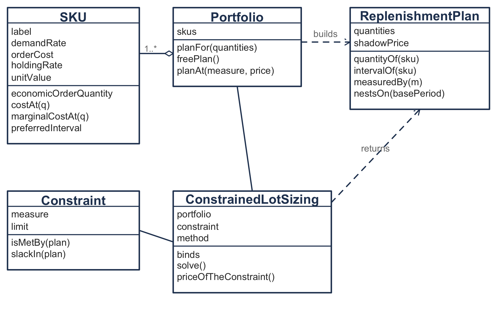
Figure 4.16 illustrates the classes that carry an answer, and we take them in turn.
The SKU holds its own data and computes its own mathematics.
class SKU(
val label: String,
val demandRate: Double,
val orderCost: Double,
val holdingRate: Double,
val unitValue: Double = 0.0,
) {
/** @eq-multiitem-objective, this SKU alone, ignoring anything it shares. */
val economicOrderQuantity: Double
get() {
require(holdingRate > 0.0) {
"$label has no holding cost, so it has no unconstrained order quantity"
}
return sqrt(2.0 * orderCost * demandRate / holdingRate)
}
/** Ordering plus holding, per unit time, at a quantity someone else chose. */
fun costAt(orderQuantity: Double): Double {
require(orderQuantity > 0.0) { "An order quantity must be positive" }
return orderCost * demandRate / orderQuantity + holdingRate * orderQuantity / 2.0
}
/** The derivative of costAt, which is what a stationarity condition needs. */
fun marginalCostAt(orderQuantity: Double): Double =
-orderCost * demandRate / (orderQuantity * orderQuantity) + holdingRate / 2.0
}Notice that costAt takes a quantity instead of computing one. Every model in this chapter evaluates a SKU at a quantity chosen elsewhere, so a class that knew only its own optimum would be useless in four of the five. For example, the exchange curve evaluates every SKU at the quantity a price implies.
marginalCostAt looks like an implementation detail of economicOrderQuantity. It is in fact the piece every constrained model needs, because a stationarity condition is where a derivative is used.
One answer type serves all five models. The constrained problem and the exchange curve solve for quantities, and joint replenishment and both echelon structures solve for intervals. Recall that \(Q_j = \lambda_j T_j\), so an object holding one can report the other.
class ReplenishmentPlan(
val skus: List<SKU>,
private val quantities: List<Double>,
val shadowPrice: Double = 0.0,
) {
fun quantityOf(sku: SKU): Double = quantities[indexOf(sku)]
fun intervalOf(sku: SKU): Double = sku.intervalFor(quantityOf(sku))
/** Delegates to the measure, which owns the formula while this owns the data. */
fun measuredBy(measure: AggregateMeasure): Double = measure.measure(this)
}This is not unification for its own sake. The chapter claims that every model in it answers how much and how often. If that claim is true, then one answer type is the right number, and a sixth model whose answer did not fit here would be evidence against the claim.
A constraint is a measure together with a ceiling. “At most ten thousand dollars of average investment” is one sentence in the domain, so we make it one object. Keeping the measure separate from the ceiling lets the same measure serve the constrained problem, the exchange curve, and a management report that constrains nothing at all.
class Constraint(val measure: ConstrainableMeasure, val limit: Double) {
fun isMetBy(plan: ReplenishmentPlan): Boolean = measure.measure(plan) <= limit
/** Positive when there is room left, negative when the plan overshoots. */
fun slackIn(plan: ReplenishmentPlan): Double = limit - measure.measure(plan)
}Recall that the worksheet of Section 4.7.1 put the bind test in B11 and \(R(\theta)\) in B15. Those two cells are isMetBy and slackIn. Both implementations put them on the constraint, because the comparison needs the measure and the limit together and needs nothing else.
4.8.5 Measuring, and Limiting a Measure
This is where the analysis pays for itself, so we go slowly.
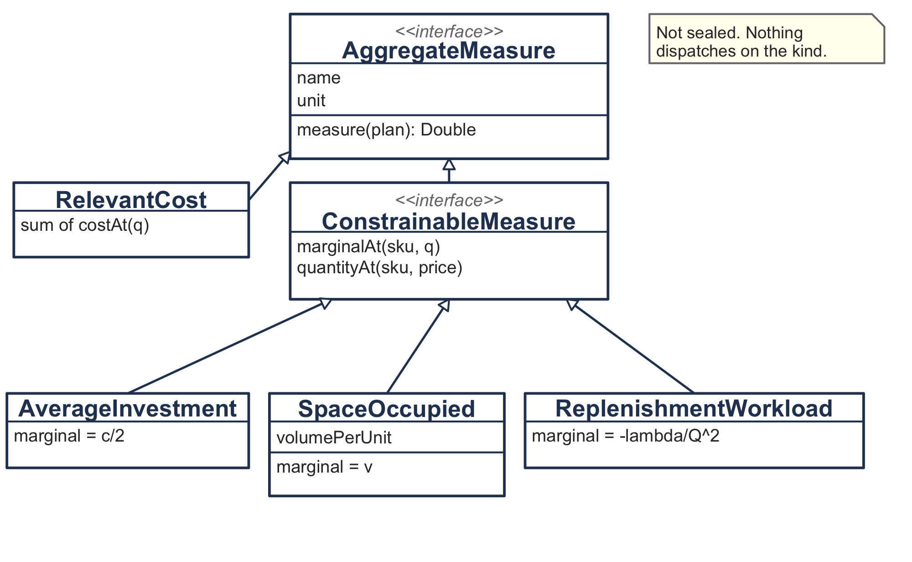
Figure 4.17 illustrates two interfaces and four kinds. We take the split first.
Relevant cost is measured constantly and constrained never. Nobody puts a ceiling on the objective, because the objective is what everything else is traded against. Putting marginalAt on one interface with measure would force RelevantCost to implement a method that has no meaning for it, and a method implemented only to satisfy a compiler is a method somebody will eventually call. Thus, AggregateMeasure is what can be measured, and ConstrainableMeasure adds what a limit needs.
The marginal is the primitive and the quantity is derived from it. Recall from Section 4.2.2 that the stationarity condition for one SKU sets the derivative of the Lagrangian to zero.
- Let \(M\) represent any aggregate measure computed over a plan, so that \(\partial M/\partial Q_j\) is how much the measure changes per unit of order quantity at SKU \(j\).
With this notation the condition is
\[-\frac{k_j\lambda_j}{Q_j^{2}} + \frac{h_j}{2} + \theta\,\frac{\partial M}{\partial Q_j} = 0\]
which is Equation 4.5 before the algebra. Notice what the condition needs. It needs the SKU’s own cost derivative, supplied by SKU.marginalCostAt, and the measure’s marginal. Nothing else. Thus, any measure that can report a marginal can be solved numerically, and we write that once as a default implementation.
interface ConstrainableMeasure : AggregateMeasure {
/** How much this measure changes per unit of order quantity at one SKU. */
fun marginalAt(sku: SKU, orderQuantity: Double): Double
fun quantityAt(sku: SKU, shadowPrice: Double): Double {
val f = { q: Double -> sku.marginalCostAt(q) + shadowPrice * marginalAt(sku, q) }
// bisect f to zero, widening the bracket until it changes sign
}
}A measure whose stationarity condition has a closed form overrides quantityAt and skips the search. Both of the measures that the chapter solves by hand do so.
object AverageInvestment : ConstrainableMeasure {
override fun measure(plan: ReplenishmentPlan): Double =
plan.skus.sumOf { it.unitValue * plan.quantityOf(it) / 2.0 }
override fun marginalAt(sku: SKU, orderQuantity: Double): Double = sku.unitValue / 2.0
override fun quantityAt(sku: SKU, shadowPrice: Double): Double =
sqrt(2.0 * sku.orderCost * sku.demandRate / (sku.holdingRate + shadowPrice * sku.unitValue))
}That is Equation 4.5 with \(a_j = c_j/2\), and it is the only place in the program where the formula appears. The worksheet wrote it in column I of one sheet and again in the curve block of another, because a worksheet has no way to say the same thing once.
The third kind is the one that no coefficient can describe. A simpler interface suggests itself. Equation 4.2 writes every limit as \(\sum_j a_jQ_j \le A\), so a measure could report the single coefficient \(a_j\) and leave the rest to the solver. That interface serves a budget, where \(a_j = c_j/2\), and it serves a floor, where \(a_j = v_j\). Recall from Section 4.2.4 that a limit on replenishments is \(\sum_j \lambda_j/Q_j \le A\). Consumption falls as the quantities rise, so the marginal is negative and depends on the quantity, and the multiplier joins the ordering cost.
object ReplenishmentWorkload : ConstrainableMeasure {
override fun measure(plan: ReplenishmentPlan): Double =
plan.skus.sumOf { it.orderFrequencyAt(plan.quantityOf(it)) }
override fun marginalAt(sku: SKU, orderQuantity: Double): Double =
-sku.demandRate / (orderQuantity * orderQuantity)
override fun quantityAt(sku: SKU, shadowPrice: Double): Double =
sqrt(2.0 * (sku.orderCost + shadowPrice) * sku.demandRate / sku.holdingRate)
}No coefficient expresses that. An interface reporting only a coefficient would force every caller to ask which kind of resource it was holding, and that is the thing an interface exists to prevent. Thus, an abstraction drawn from two examples fits the third by luck or not at all, and the mathematics is what tells you which.
Why a hierarchy, and not one class holding two functions? In Kotlin we could write a single AggregateMeasure class with measure and marginalAt as function-valued properties, and the four kinds as four instances. That design would be better if the kinds differed only in a formula. They do not. SpaceOccupied knows a volume per unit, and a weight limit would know a weight per unit, while AverageInvestment reads the SKU’s own value and knows nothing extra. That is, the kinds differ in what they know, and holding state that varies by kind is what a subtype is for.
Notice also that this hierarchy is not sealed, while Section 3.11.3 seals four hierarchies in Chapter 3. Sealing buys exhaustive checking, and exhaustive checking pays only when something dispatches on the kind and the mathematics closes the list. Both conditions hold in Chapter 3, where Table 3.1 is a table of four rows. Neither holds here. A solver asks a measure for a number and never asks which measure it is holding, and the list of scarce things in Section 4.1 is open. Thus, a new measure needs two methods and no edit anywhere else.
4.8.6 Alternatives Are Types, Settings Are Values
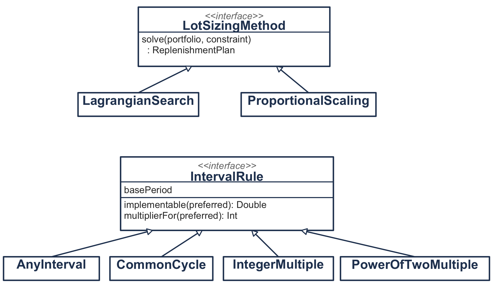
Figure 4.18 illustrates two more hierarchies, and both exist because the domain offers alternatives.
Section 4.2.3 searches the multiplier until the measure meets its ceiling, which Goal Seek does on the worksheet and LagrangianSearch does here. Solver offers a second way, optimizing the quantities directly, which the code shown here does not implement. And Section 4.3 gives a third, a closed form under a budget when every SKU holds at \(h_j = ic_j\). Every quantity then shrinks by the same factor, so we can invert Equation 4.9.
class ProportionalScaling(private val carryingCharge: Double) : LotSizingMethod {
override fun solve(portfolio: Portfolio, constraint: Constraint): ReplenishmentPlan {
val free = AverageInvestment.measure(portfolio.freePlan())
val ratio = free / constraint.limit
val price = carryingCharge * (ratio * ratio - 1.0)
return portfolio.planAt(AverageInvestment, price)
}
}Notice that no search appears in it. It reproduces the multiplier of Section 4.2 to every digit the search finds, and it refuses to run when its preconditions fail. An interface with one implementation is speculation. The second implementation is what justifies this one.
Section 4.5.1 does not present one model with a setting. It presents four practices: order whenever you like, order everything on every cycle, order on whole multiples of a cycle, and order on powers of two. Each one answers the same question. Given the interval a location would prefer, what interval can the operation run?
interface IntervalRule {
val name: String
val basePeriod: Double
/** The runnable interval nearest the one this SKU or block would prefer. */
fun implementable(preferredInterval: Double): Double
fun multiplierFor(preferredInterval: Double): Int =
max(1, Math.round(implementable(preferredInterval) / basePeriod).toInt())
}
class PowerOfTwoMultiple(override val basePeriod: Double) : IntervalRule {
override fun implementable(preferredInterval: Double): Double =
(1 shl exponentFor(preferredInterval)) * basePeriod
}That question subsumes what look like two concepts. Coordinating a family and rounding an interval to a power of two appear to be different jobs, and they are one job with different answers. Thus, the arithmetic of Equation 4.28 is a function inside PowerOfTwoMultiple and not a class of its own, since it holds no state and there is only one way to do it. multiplierFor is written once on the interface, because under every rule the multiplier is the implementable interval divided by the base period.
We state the criterion behind both decisions once, since you will face the same question in every design you write.
Make a class when it holds state that varies independently of its arguments, or when it is one of several interchangeable ways of doing the same thing. A computation with neither property is a function.
Measured against that criterion, LotSizingMethod and IntervalRule are interfaces because they name interchangeable alternatives, SpaceOccupied is a class because it carries a volume map, and the power-of-two exponent is a function because it is neither.
4.8.7 Three Couplings and No Common Base
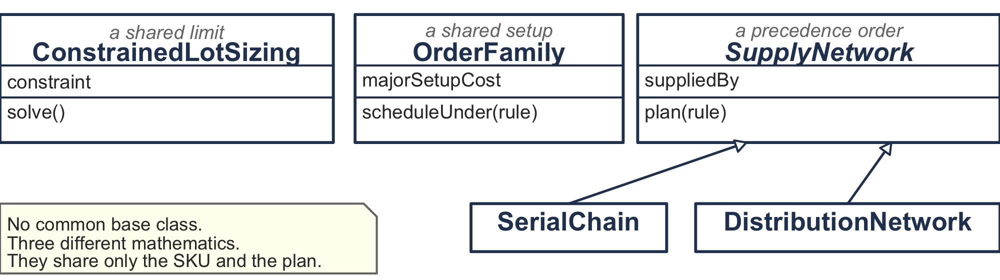
The temptation here is a Model interface with a solve() on it, so that all three couplings can be held in one list. Recall that Section 4.1 says these are three different kinds of interaction, and the mathematics agrees. One is a Lagrangian relaxation, one is a one-dimensional search over a base period, and one is a combinatorial partition. Figure 4.19 shows what they do share, the SKU and the plan. A common supertype would assert a kinship the chapter denies, and every caller would then have to ask what it was really holding.
The two network topologies do share a supertype. They differ in the shape of one map, from a location to the location that supplies it. A chain points each location at the one above it, and a distribution network points every region at the center.
abstract class SupplyNetwork(
val skus: List<SKU>,
private val suppliedBy: Map<SKU, SKU>,
) {
/** @eq-echelon-holding: the value this location adds, not the value accumulated through it. */
fun echelonRate(sku: SKU): Double =
sku.holdingRate - (suppliedBy[sku]?.holdingRate ?: 0.0)
/** The intervals that solve the relaxed problem, before any rounding. */
abstract fun relaxedIntervals(): List<Double>
/** The relaxed intervals made runnable, one rule applied to every location. */
fun plan(rule: IntervalRule): List<Double> = relaxedIntervals().map { rule.implementable(it) }
}One expression serves both structures. It gives \(h_i - h_{i+1}\) down a chain and \(h_i - h_0\) across a distribution network, and it gives a location with no supplier its own rate, which Equation 4.31 states as a separate case. Notice that echelonRate sits on the network and not on the SKU. An echelon rate is a difference between neighbors, and a SKU that knew its neighbor would record the topology twice.
The two subclasses override the one thing that differs, the algorithm. SerialChain implements Algorithm 4.1 and DistributionNetwork implements the scan of Section 4.6.3. Section 4.7 built a worksheet for the second and not for the first, and the reason survives the change of language. The scan has a step count known in advance and the partition does not.
4.8.8 How the Objects Solve It
A class model says what exists. It does not say what happens, so we trace S1 of Table 4.24 from the caller to the answer.
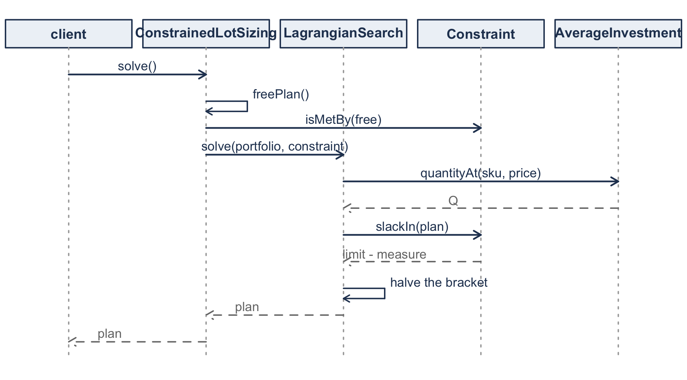
The four middle messages of Figure 4.20 repeat until the bracket closes.
class LagrangianSearch(
private val precision: Double = 1.0E-12,
private val maximumIterations: Int = 400,
) : LotSizingMethod {
override fun solve(portfolio: Portfolio, constraint: Constraint): ReplenishmentPlan {
val measure = constraint.measure
var lo = 0.0
var hi = 1.0
while (constraint.slackIn(portfolio.planAt(measure, hi)) < 0.0) {
hi *= 2.0
check(hi < 1.0E12) {
"No price high enough to meet the ${measure.name} limit of ${constraint.limit}"
}
}
repeat(maximumIterations) {
val mid = 0.5 * (lo + hi)
if (hi - lo < precision) return@repeat
if (constraint.slackIn(portfolio.planAt(measure, mid)) < 0.0) lo = mid else hi = mid
}
return portfolio.planAt(measure, 0.5 * (lo + hi))
}
}Notice what the search does not know. It never writes Equation 4.5, never names a budget, and never asks what the measure is. It knows that raising the price lowers consumption, which Section 4.2.3 proves, and it relies on nothing else. Thus, one search serves a working capital account, a warehouse floor and a purchasing department, and quantityAt belongs on the measure.
Notice also the first two lines of the loop. The search widens its bracket until the slack changes sign. Section 4.7.1 observed that Goal Seek does not take that step, since it starts from whatever is already in the cell. Neither tool is safe on its own, and both rest on the same proof. They differ in how much of the search they arrange for you.
Section 4.8.1 said that solving under a limit and tracing the frontier would turn out to be one thing. Compare the two.
fun at(shadowPrice: Double): ReplenishmentPlan {
val quantities = priced.skus.map { AverageInvestment.quantityAt(it, shadowPrice) }
return portfolio.planFor(quantities, shadowPrice)
}That is the body of the search’s inner step with the search removed, because the exchange curve is handed the price instead of finding it. Same objects, same message, one fewer participant. Had these two restated Equation 4.5 separately, the design would have failed at the exact place where Section 4.4 says the two problems meet.
One subtlety deserves a line. priced is the portfolio with every holding rate set to zero, because Section 4.4 has the multiplier replace the carrying charge instead of adding to it. Expressing that as a property of the SKUs keeps AverageInvestment.quantityAt the only place a quantity is computed.
A point on the curve is not a new kind of thing. at returns a ReplenishmentPlan, the type the constrained solve returns, because a point on the exchange curve is a portfolio evaluated at a price. It already has an investment and an ordering cost, the two axes of Figure 4.1. A CurvePoint class would add a noun the chapter never uses and force a conversion at every boundary. Before adding a type for a result, check whether the result is a familiar object under new conditions.
Two smaller decisions follow. The curve returns a Sequence and not a List, so a thousand-point sweep evaluates one point at a time and holds one. And the variety index \(J^{*}\) of Equation 4.19 is computed once on the curve, since it depends only on the items. Putting it on each point would compute the same number a thousand times and suggest that it varies along the curve.
4.8.9 Solving the Chapter’s Examples
A design is judged by what it is like to use. We take the five scenarios of Table 4.24 in order and solve the chapter’s own examples with it. Every figure below is produced by running the code, in the way Section 3.12 produces the figures of Chapter 3.
| To answer | Build | Then ask for |
|---|---|---|
| Section 4.2, a limit | Portfolio, Constraint, ConstrainedLotSizing |
binds, solve(), priceOfTheConstraint() |
| Section 4.3, what it cost | the same study | priceOfTheConstraint(), quantityRatios() |
| Section 4.4, the frontier | ExchangeCurve |
constant, varietyIndex, at(price) |
| Section 4.5, a shared setup | OrderFamily, an IntervalRule |
costOf(rule), bestBasePeriod, scheduleUnder(rule) |
| Section 4.6.2, a chain | SerialChain |
blocks(), relaxedIntervals(), plan(rule) |
| Section 4.6.3, a network | DistributionNetwork |
ranked(), pinnedSet(), centralInterval(), plan(rule) |
Example 4.1 is three items, a carrying charge of 30% per year, and $10,000 of working capital. We build the portfolio and the constraint, then hand both to a study.
val skus = listOf(
SKU.pricedAt("Item 1", demandRate = 12000.0, unitValue = 20.0,
orderCost = 50.0, carryingCharge = 0.30),
SKU.pricedAt("Item 2", demandRate = 25000.0, unitValue = 10.0,
orderCost = 50.0, carryingCharge = 0.30),
SKU.pricedAt("Item 3", demandRate = 8000.0, unitValue = 15.0,
orderCost = 50.0, carryingCharge = 0.30),
)
val storeroom = Portfolio(skus)
val budget = Constraint(AverageInvestment, limit = 10000.0)
val study = ConstrainedLotSizing(storeroom, budget)Three lines of construction, and nothing has been computed yet. We now ask the study what it was built for.
study.binds // true
val held = study.solve()
held.shadowPrice // 0.146430
held.measuredBy(AverageInvestment) // 10000.0000
held.measuredBy(RelevantCost) // 7464.2984
study.priceOfTheConstraint() // difference 145.0375, 1.9816%
study.quantityRatios() // 0.819755 three timesEvery figure is Example 4.1’s. Notice that we ask measuredBy for two different measures of one plan. One of them is the limited quantity and the other is the objective, and the plan does not know which one was constrained.
Changing the constraint changes one line. Example 4.2 is the same distributor with ordering costs that differ across items and a dock that can take 50 receipts a year, so dockSkus holds the data of Table 4.3.
val dock = ConstrainedLotSizing(
Portfolio(dockSkus),
Constraint(ReplenishmentWorkload, limit = 50.0),
) free orders per year 85.1341
free relevant cost 6815.3324
shadow price 64.3293 per order
Item 1 k+theta 114.3293 held 676.2523 ratio 1.5121
Item 2 k+theta 84.3293 held 1185.5328 ratio 2.0534
Item 3 k+theta 144.3293 held 716.3594 ratio 1.3432
orders per year 50.0000
relevant cost 7621.2652
the limit cost 805.9328 (11.8253%)Section 4.1 called a budget and a dock two of the four things an organization runs short of. Here that claim is discharged by one word in one argument. ConstrainedLotSizing, LagrangianSearch and Portfolio are untouched. The measure changed, and with it the sign of the marginal, the term the multiplier joins, and the fact that the quantities grow instead of shrinking.
Look next at the ratios. Under the budget every item shrank by the same 0.819755, and here they grow by 1.51, 2.05 and 1.34. Thus, the code reproduces the distinction of Section 4.3, that a budget rescales while a dock reallocates, and no type in the program knows that the distinction exists.
Where a closed form exists, we pass it as a third argument.
ConstrainedLotSizing(storeroom, budget, ProportionalScaling(carryingCharge = 0.30))The search returns 0.14642984 and the closed form returns 0.14642984. For example, asking ProportionalScaling for a space limit raises an error instead of returning a wrong number, since Section 4.3 holds only under a budget with \(h_j = ic_j\).
Example 4.5 is nine items in a utility storeroom, held in a Portfolio named utility.
val curve = ExchangeCurve(utility)
curve.constant // 195,147,265.65
curve.decomposedConstant // 195,147,265.65
curve.varietyIndex // 5.6813
curve.investmentAt(0.25) // 27,939.02
curve.orderingCostAt(0.25) // 6,984.76The two routes to the constant, Equation 4.18 and Equation 4.22, agree to the cent. That is the arithmetic check the worksheet performs in rows 15 and 16. Sweeping the price illustrates the claim of Equation 4.14.
price 0.10 investment 44175.48 ordering 4417.55 product 195147265.65
price 0.25 investment 27939.02 ordering 6984.76 product 195147265.65
price 0.40 investment 22087.74 ordering 8835.10 product 195147265.65Example 4.7 is four items on one truck with a $400 major setup. Here the rule is what varies, so the rule is what we pass.
val family = OrderFamily(Portfolio(supplierSkus), majorSetupCost = 400.0)
family.independentCost // 8422.39
family.costOf(CommonCycle(family.commonCycleInterval))
val best = PowerOfTwoMultiple(family.bestBasePeriod { PowerOfTwoMultiple(it) })
family.costOf(best)
family.scheduleUnder(best).nestsOn(best.basePeriod) independent 8422.39
common cycle 6497.54 T = 0.14621 year (53.4 days)
integer multiple 6402.06 T = 0.14214 year (51.882 days) m = [1, 1, 2, 6]
power of two 6403.34 T = 0.14192 year (51.800 days) m = [1, 1, 2, 8]
nesting costs 0.0200%
the schedule nests trueNotice that bestBasePeriod takes a function from a base period to a rule, and not a rule itself. The search runs over base periods and every rule carries one, so the caller has to say how to build a rule at each candidate. That is the one place where the shape of the interface imposes something on a caller.
The last line checks the chapter’s argument instead of accepting it. Section 4.5.2 justifies powers of two by nesting, and nestsOn asks the answer whether it nests.
Example 4.9 is five stages and Example 4.10 is a warehouse feeding six regions. We build them differently and ask them the same questions.
val chain = SerialChain(stages)
chain.blocks() // {1,2} at 0.5933, {3,4,5} at 0.6234
chain.costOf(chain.relaxedIntervals()) // 183.25
val weekly = PowerOfTwoMultiple(1.0 / 52.0)
chain.costOf(chain.plan(weekly)) // 183.31
val network = DistributionNetwork(warehouse, regions)
network.ranked() // 5, 3, 6, 4, 1, 2
network.pinnedSet() // 6, 4, 1, 2
network.centralInterval() // 0.343049
network.plan(weekly) // every location at 0.307692The same weekly object goes to a chain and to a network, and neither asks what it is. An interval rule turns a preferred interval into a runnable one, and a chain block and a warehouse both have a preferred interval.
No listing in this section branches on which constraint, which method, which ordering practice or which topology is in play. The if that a first implementation would write in each of those places is instead the choice of which object we constructed, made once, at the top.
4.8.10 Checking the Design Against the Mathematics
A design that cannot be checked is an opinion. Two things make this one checkable.
The first is Table 4.28, in which every result of this chapter has one home in the code.
| The mathematics | Where it lives |
|---|---|
| Equation 3.17 | SKU.economicOrderQuantity |
| Equation 4.2 | AggregateMeasure.measure, Constraint.isMetBy |
| Equation 4.5 | ConstrainableMeasure.quantityAt |
| Equation 4.6 | LagrangianSearch, over Constraint.slackIn |
| Equation 4.9 | ProportionalScaling |
| Equation 4.14, Equation 4.19 | ExchangeCurve |
| Equation 4.23, Equation 4.25 | OrderFamily, IntegerMultiple |
| Equation 4.28, Equation 4.30 | PowerOfTwoMultiple |
| Equation 4.31 | SupplyNetwork.echelonRate |
| Algorithm 4.1 | SerialChain.blocks |
Read Table 4.28 in both directions. Downward it says where to look when a number is wrong. Upward it tests the design, because every class in the package appears in the table or collaborates with something that does. A class in neither would be doing something this chapter never asked for.
The second is that every quantity the chapter reports can be recomputed a second way. Two of those second ways are worth carrying past this chapter.
Check a marginal against a numerical derivative. Each ConstrainableMeasure supplies both a measure and its marginal, and the marginal is where a sign slip hides. Such a slip still produces order quantities and still converges, so the answer looks like an answer. Comparing marginalAt against a numerical derivative of the measure beside it is what catches that, and nothing else will. For the same reason, each closed-form quantityAt is worth comparing against the general root finding default, which also demonstrates that a new measure really does need only two methods.
Check against an instance that can exhibit the thing being checked. A portfolio whose ordering costs are all equal cannot show the reallocation of Example 4.2, because a constant added to equal ordering costs changes them equally. A check written on such a portfolio agrees with the chapter and confirms nothing. Notice that it would look correct. Recall from Section 3.12 that this is not hypothetical: a ranking there came out identical under two different wrong objectives, and only a portfolio with unequal costs told them apart.
One question separates a design from an arrangement. What does the next requirement cost? A fifth measure, say a limit on handling hours, is a new class with two methods and no edit anywhere. A fifth ordering practice is a new IntervalRule. A third solution method is a new LotSizingMethod, and a third network topology is a subclass supplying one map and one algorithm. None of those changes an existing class.
4.9 Summary
Recall that Chapter 3 decided one item at a time. This chapter kept every assumption of that chapter except the one that made it easy.
Three kinds of coupling, three kinds of mathematics. A shared resource couples items through a constraint and leaves their cost functions separate. A shared setup couples their cost functions and leaves them free of constraints. An echelon structure couples them end to end, so that one stock exists in order to replenish another. Thus, the first is solved by moving the constraint into the objective, the second by imposing structure on the schedule, and the third by fixing the accounting before either technique can be applied.
The multiplier is the economics, not the arithmetic. The multiplier \(\theta^{*}\) is the rate at which relaxing the limit reduces cost. Thus, it says what another dollar of budget or another square foot is worth, and when it stops being worth asking for.
Where it enters depends on the constraint, and the three cases should be kept separate. Under a limit on stock the multiplier is added to the holding rate, as a surcharge on whatever consumes the scarce resource. Under a limit on replenishments it is added to the ordering cost instead, and carries units of dollars per order. Where holding cost does not appear in the objective at all, as when management fixes an investment target, the multiplier takes its place and is the implied carrying charge.
A budget constraint rescales and does not reallocate. When holding cost is a carrying charge on value, every order quantity shrinks by the same factor \(\sqrt{i/(i+\theta)}\). That is, the unconstrained solution already had the items in the right proportion, and the constraint asks only that everything be smaller. You should treat this as specific to a budget. A space constraint, whose coefficients have nothing to do with value, reallocates, and so does a limit on replenishments, because a constant added to unequal ordering costs changes them unequally.
Aggregate performance lies on a curve fixed by the item data. Investment and replenishment frequency cannot be chosen separately. Their product is determined by the item data and their ratio is \(k/\gamma\). Thus, a portfolio above the curve can improve on both measures at once, and a portfolio on the curve is asserting a cost ratio. Comparing that assertion against estimated costs is a check on practice that needs no new data.
When ordering costs differ across items the same curve survives, in the form \(\frac{1}{2}J^{*}K^{w}\lambda^{a}c^{w}\). Four things therefore set the frontier: how varied the items are, what an order costs, how much is demanded, and what the goods are worth.
Coordination is worth more than cleverness. In Example 4.7, sharing orders at a single common cycle captured 23 of the 24 percentage points available, and differentiating the multipliers added one. Restricting those multipliers to powers of two, which is what makes a schedule nest and therefore what makes it runnable, cost two hundredths of a percent against a worst case of 6.07%. Recall that this worst case is Equation 3.22 applied to cycle lengths. Thus, the flatness that made case quantities affordable in Section 3.7 is the same fact that makes power-of-two schedules affordable here.
Echelons need their own accounting, and then behave like everything else. A unit held at a downstream stage has already been paid for upstream, so charging every stage its installation rate counts the same money twice. Echelon stock and the value-added rate \(h'_i = h_i - h_{i+1}\) fix that. Once fixed, every stage looks like an EOQ in the interval form of Equation 4.26.
What remains is the ordering constraint. Stages in a chain must not replenish faster than what they supply, and locations in a distribution system must not wait longer than the warehouse that feeds them. Both are solved the same way, by merging the locations that would violate the constraint into blocks that share an interval and then rounding each block to a power of two. Notice that in Example 4.9 and Example 4.10 the rounding put every location on one schedule, because intervals within a factor of two often collapse to the same power.
Two implementations, and what each one makes visible. Section 4.7 built these models as worksheets and Section 4.8 built them as a program, and the two were kept apart because they teach different things. A worksheet makes a method visible: a formula is a cell and a layout is a claim about the model that anybody can see. A program makes a structure visible instead, and only to whoever wrote down the analysis behind it. Notice that the same four questions were answered on both sides. What belongs to an item and what belongs to the problem, whether a difference is a value or a kind, whether a result needs a new name, and when a search may be trusted.
Throughout this chapter demand has remained known and constant. In the next chapter we let it vary over time while keeping it known, which is the subject of Chapter 5. From Chapter 7 onward it stops being known at all, and Chapter 9 returns to the serial and distribution structures of this chapter once it does.
4.10 Exercises
Unless an exercise says otherwise, use these conventions so that your answer and the instructor’s agree. Take the time unit to be one year. Report order quantities and reorder intervals to four decimal places, multipliers and reorder intervals in weeks to two, costs to the nearest cent, and multipliers, ratios and indices to six significant figures. Where an exercise asks for a bisection, iterate until the constraint is met to within one part in a million of the limit. Round an order quantity to an integer only when the exercise asks for the quantity that would actually be ordered.
Exercise 4.1 Four items are stocked, each costing $40 to order, with a carrying charge of 25% per year.
| Item | \(\lambda_j\) | \(c_j\) |
|---|---|---|
| 1 | 6,000 | $30 |
| 2 | 15,000 | $8 |
| 3 | 2,400 | $50 |
| 4 | 40,000 | $2 |
Determine the unconstrained order quantities and the average investment they require. Then impose a budget of $6,000 on average investment, find \(\theta^{*}\) by bisection on Equation 4.6, and report the constrained quantities and the annual cost of the constraint.
Verify Equation 4.9 by computing the ratio of each constrained quantity to its unconstrained value, and confirm that all four ratios agree.
Exercise 4.2 Repeat Exercise 4.1 with a space constraint instead of a budget. Item \(j\) occupies \(v_j\) cubic feet per unit, with \(v_1 = 0.5\), \(v_2 = 0.2\), \(v_3 = 1.5\), and \(v_4 = 0.05\), and 400 cubic feet of shelf are available at the moment a replenishment arrives, which is when the stock is at its peak.
Determine the constrained quantities, then compute the ratio of each to its unconstrained value as you did before.
Explain why the ratios are no longer all equal, and identify the property of the budget constraint that Equation 4.9 depends on.
Exercise 4.3 The multiplier is a shadow price. For the item set of Exercise 4.1, compute the minimum relevant cost at budgets of $5,000, $6,000, $7,000, $8,000, and at the unconstrained investment.
Plot the minimum cost against the budget, and estimate the slope at $6,000 numerically. Compare it with \(-\theta^{*}\) from Exercise 4.1 and explain any difference.
State the budget at which the multiplier reaches zero, and say what that budget is in terms of the unconstrained solution.
Exercise 4.4 A firm places 250 replenishment orders a year across a group of items and carries $1,000,000 of cycle stock. Its accountants report a carrying charge of 22% per year, and a study of the purchasing department estimates the ordering cost at $120 per order.
Assuming the firm is on its exchange curve, determine the cost ratio its practice implies and compare it with the ratio its stated costs imply.
State which direction along the curve the firm should move, whether that means ordering more often or less often, and what it would do to the stock it carries. Then state the one circumstance under which the comparison would tell you nothing.
Exercise 4.5 For the nine items of Example 4.5, verify by direct computation that \(\bar{I}^{a}\cdot\overline{\mathit{OC}}^{a}\) is the same at \(\theta = 0.10\) and at \(\theta = 0.50\).
Then compute the variety index from Equation 4.19, and recompute it after deleting the pad-mount transformer from the portfolio. Report both values and explain what the change says about that item’s contribution to aggregate performance.
Finally, compute \(\lambda^{a}\), \(C^{a}\), \(c^{w}\), and \(K^{w}\) for the full portfolio and confirm that Equation 4.22 reproduces the constant you verified above.
Exercise 4.6 For the four items of Example 4.7, suppose the major setup cost falls from $400 to $50 because the supplier introduces electronic ordering.
Recompute the independent, common-cycle, and best integer-ratio policies. Report the new multipliers and say what has happened to the value of coordinating.
Explain, in terms of Equation 4.23, why a small major setup cost pushes the solution back toward independent ordering.
Exercise 4.7 Show that for a cost of the form \(C(T) = k/T + hT/2\), choosing \(T\) to be \(\sqrt{2}\) times its optimal value costs exactly the same as choosing it to be \(1/\sqrt{2}\) times that value, and that both cost the 6.07% of Equation 4.30.
Then explain why this is the worst case for a power-of-two policy, and why a policy whose base period may itself be chosen does better than 6.07%.
Exercise 4.8 The items of Example 4.7 are reordered under a common cycle policy, which Example 4.7 shows captures most of the available saving.
Compute, for each of the four items separately, the penalty its own cost incurs under the common cycle relative to the cycle it would choose under the power-of-two policy. Report which item bears the cost of the simplification and by how much.
Then state the management argument for adopting the common cycle anyway, and the argument against.
Exercise 4.9 A three stage chain has \(\lambda = 1{,}000\) units per year and installation holding rates \(h_1 = \$0.80\), \(h_2 = \$0.55\), \(h_3 = \$0.20\) per unit per year.
Compute the echelon holding rates \(h'_i\) and verify Equation 4.32 by showing that \(h'_1 + h'_2 + h'_3\) recovers \(h_1\).
Then, at an instant when the on-hand quantities are 40, 90, and 25 units at stages 1, 2, and 3, report the echelon stock at each stage and the total value-added holding cost rate being incurred, and confirm that it equals what installation accounting would charge.
Exercise 4.10 A four stage chain, \(4 \to 3 \to 2 \to 1\), runs at \(\lambda = 800\) units per year with a weekly base period.
| Stage \(i\) | 1 | 2 | 3 | 4 |
|---|---|---|---|---|
| \(k_i\) | $18 | $40 | $9 | $30 |
| \(h_i\) | $1.00 | $0.70 | $0.30 | $0.10 |
Compute \(h'_i\) and \(g_i\), then show that the stage-by-stage intervals \(\sqrt{k_i/g_i}\) violate Equation 4.39.
Run the algorithm of Section 4.6.2 to find the blocks, report \(T(r)\) for each, and round each to a power of two. State the cost of the relaxed solution, the cost of the power-of-two solution, and the penalty between them.
Exercise 4.11 In Example 4.10 the ordering cost at the central warehouse is $500. Suppose it falls to $150.
Rebuild \(\mathcal{C}^{0}\) and report which regions are now pinned to the central warehouse and which are left alone.
Explain, in terms of the test in Section 4.6.3, why lowering \(k_0\) pulls regions into \(\mathcal{C}^{0}\) rather than releasing them, and say what that means physically about a central warehouse that becomes cheap to replenish.
Then work the comparison in the other direction and identify the value of \(k_0\) at or above which no region is pinned at all.
Exercise 4.12 Both Example 4.9 and Example 4.10 end with every location on a single power-of-two interval, even though the relaxed solution gave each block or region a different one.
Explain why this happens, and state exactly when two relaxed intervals round to the same power of two. Then show that a ratio below two is not sufficient, using your own answer to Exercise 4.10 as the counterexample.
Finally, modify the data of Example 4.10 so that the pinned set and region \((1)\) round to different powers of two, and report the intervals that result.